Synthèse — le bootcamp en un coup d'œilSummary — the bootcamp at a glance
état au mardi 6 octobre 2026status as of Tuesday 6 October 2026Le projet en brefThe project in brief
Le CDF Bootcamp de Cognite fait construire de bout en bout une solution Cognite Data Fusion (CDF) pour une usine fictive, l'Ice Cream Factory : ingestion des équipements et des séries temporelles depuis une API REST, modélisation, calcul de l'OEE (Overall Equipment Effectiveness = qualité × performance × disponibilité), orchestration, puis visualisation dans Charts et Canvas. Tout est décrit dans des fichiers et déployé avec le Cognite Toolkit, d'abord sur un projet de test, puis sur un projet de production.
Cognite's CDF Bootcamp has you build an end-to-end Cognite Data Fusion (CDF) solution for a fictional plant, the Ice Cream Factory: ingest assets and time series from a REST API, model them, compute OEE (Overall Equipment Effectiveness = quality × performance × availability), orchestrate the pipeline, then visualise it in Charts and Canvas. Everything is described in files and deployed with the Cognite Toolkit, first to a test project, then to a production project.
L'usine compte dix sites : Oslo, Hannover, Nuremberg, Rotterdam, London, Marseille, Chicago, Houston, São Paulo et Kuala Lumpur. Chaque site a quatre zones : réception et matières premières, production, chambre froide, produits finis. Il existe trois tailles de site, selon que la production compte une, deux ou trois branches de sept lignes : 58 équipements pour un petit site (Chicago, Houston, Oslo, São Paulo), 107 pour un moyen (Hannover, London, Marseille), 156 pour un grand (Kuala Lumpur, Nuremberg, Rotterdam), soit 1021 en tout. Les noms suivent la norme ISA-95. Chacune des 628 unités de production porte quatre séries : count (pièces produites), good (pièces conformes), status (la machine tourne) et planned_status (elle devait tourner).
The plant has ten sites: Oslo, Hannover, Nuremberg, Rotterdam, London, Marseille, Chicago, Houston, São Paulo and Kuala Lumpur. Each site has four areas: receiving and raw material, production, cold store, product. Sites come in three sizes, depending on whether production has one, two or three branches of seven lines: 58 assets for a small site (Chicago, Houston, Oslo, São Paulo), 107 for a medium one (Hannover, London, Marseille), 156 for a large one (Kuala Lumpur, Nuremberg, Rotterdam), 1021 in total. Names follow the ISA-95 standard. Each of the 628 production units carries four series: count (items produced), good (conforming items), status (the machine is running) and planned_status (it was meant to run).
Cette page garde la trace de ce qui a été fait chaque jour, des notions à retenir et des pièges rencontrés, pour pouvoir le refaire ou l'expliquer à un collègue. Elle ne contient aucun secret ni identifiant technique.
This page records what was done each day, the concepts worth keeping and the pitfalls we hit, so the work can be repeated or explained to a colleague. It contains no secret and no technical identifier.
La solution, étape par étapeThe solution, stage by stage
Chaque jour du bootcamp ajoute un maillon à la chaîne, des accès jusqu'à la visualisation.
Each bootcamp day adds a link to the chain, from access rights through to visualisation.
Les trois temps du trajet des donnéesThe three stages of the data journey
| TempsStage | Ce que cela veut direWhat it means | Nos briquesOur building blocks |
|---|---|---|
| Rendre la donnée disponibleMake data available | L'amener de la source jusqu'à CDF.Bring it from the source into CDF. | Fondations, hosted extractors, function d'extraction des valeursFoundations, hosted extractors, the function that extracts the values |
| Lui donner du sensMake data meaningful | La structurer et relier les données entre elles.Structure it and link data together. | Transformations : hiérarchie des équipements, contextualisation des sériesTransformations: asset hierarchy, contextualisation of the series |
| En tirer de la valeurMake data valuable | S'en servir pour comprendre et décider.Use it to understand and decide. | Calcul de l'OEE, Charts, CanvasOEE calculation, Charts, Canvas |
L'ensemble est décrit dans des fichiers, déployé en ligne de commande et rejoué par le workflow.
The whole chain is described in files, deployed from the command line and replayed by the workflow.
Avancement par jourProgress by day
| JourDay | Ce qui est livréWhat is delivered | Test | Prod | |
|---|---|---|---|---|
| Jour 1 · Data FoundationDay 1 · Data Foundation | Six service principals, quatre CDF groups reliés à Entra, deux data sets, la base RAW et deux spaces, déployés avec le Toolkit. Six service principals, four CDF groups linked to Entra, two data sets, the RAW database and two spaces, deployed with the Toolkit. | DéployéDeployed | DéployéDeployed | |
| Jour 2 · Data Integration A et Data ModelingDay 2 · Data Integration A and Data Modeling | Deux hosted extractors et deux Transformations : 1021 équipements organisés en hiérarchie et 2512 séries temporelles rattachées à leur équipement. Two hosted extractors and two Transformations: 1021 assets organised in a hierarchy and 2512 time series linked to their asset. | DéployéDeployed | DéployéDeployed | |
| Jour 3 · Data Integration B et OrchestrationDay 3 · Data Integration B and Orchestration | Une extraction pipeline, deux Cognite Functions et un Data Workflow : 14 jours de valeurs chargés, 3140 séries OEE calculées, et un pipeline qui se rejoue seul toutes les 15 minutes. One extraction pipeline, two Cognite Functions and one Data Workflow: 14 days of values loaded, 3140 OEE series calculated, and a pipeline that replays itself every 15 minutes. | DéployéDeployed | DéployéDeployed | |
| Jour 4 · Charts et CanvasDay 4 · Charts and Canvas | Un graphique Charts avec recalcul de l'OEE et alerte, et un canvas qui explique les chutes d'OEE d'une machine : 28 arrêts en 15 jours, dont 13 non planifiés. A Charts chart with an OEE recalculation and an alert, and a canvas explaining a machine's OEE drops: 28 stops in 15 days, 13 of them unplanned. | Sans objetNot applicable | FaitDone |
L'évaluation : où nous en sommesThe evaluation: where we stand
Grille présentée en ouverture du support de formation : quatre composantes, réussite à partir de 70 %.
Rubric shown at the start of the training deck: four components, pass from 70%.
| ComposanteComponent | PoidsWeight | Ce qui est attenduWhat is expected | Notre situationWhere we are | |
|---|---|---|---|---|
| Projets CDFCDF projects | 40 % | Toutes les données présentes en test et en production.All data present in test and in production. | Les 21 contrôles sont au vert sur les deux projets (6 octobre).All 21 checks pass on both projects (6 October). | FaitDone |
| Canvas | 20 % | Un canvas complet.A complete canvas. | Plan, équipement, six séries, graphique, rectangle et note. Le canvas affiche « Private charts » : vérifier que la formatrice peut y voir le graphique.Drawing, asset, six series, chart, rectangle and note. The canvas shows "Private charts": check that the instructor can see the chart in it. | À vérifierTo check |
| Dépôt GitHubGitHub repository | 20 % | Production déployée depuis main avec revue obligatoire, branche main protégée, GitHub Actions réussies.Production deployed from main with a required review, main branch protected, GitHub Actions succeeded. |
Non fait : le travail est en local. La procédure est prête (phase 13 du mode opératoire).Not done: the work is local. The procedure is ready (phase 13 of the procedure tab). | À faireTo do |
| Quiz de fin de bootcampPost-bootcamp quiz | 20 % | 70 % de bonnes réponses.70% correct answers. | À passer. Thèmes à réviser ci-dessous.Still to take. Topics to revise below. | À faireTo do |
Le même support contient, plus loin, une autre version de la grille avec d'autres poids (50, 10, 20, 20) et une condition supplémentaire : avoir terminé le parcours « CDF Fundamentals » de Cognite Academy. Les deux points sont à confirmer avec la formatrice.
Further on, the same deck holds another version of the rubric with other weights (50, 10, 20, 20) and one more condition: having completed the "CDF Fundamentals" path of Cognite Academy. Both points are to be confirmed with the instructor.
Enseignements clés à ce stadeKey lessons so far
- Dans CDF, on commence par les accès : l'identité vit dans Entra, les droits dans CDF, et un seul identifiant (le Source ID) relie les deux.
- Toute la configuration est écrite dans des fichiers et déployée par le Toolkit. La même configuration sert pour le test et la production ; seules les valeurs changent.
- Un déploiement se prépare toujours par un dry-run, et se contrôle par un second dry-run.
- Sur un poste d'entreprise, il faut prévoir la version exacte de l'outil et le proxy de sécurité : ce sont les deux causes d'erreur qui ont coûté le plus de temps.
- « Déployé » ne veut pas dire « alimenté ». Après chaque étape on compte les lignes, les objets et les liens manquants ; c'est ce contrôle qui a révélé un compte technique sans droits.
- Quand un accès est refusé, on vérifie les droits que le compte obtient réellement, pas ceux qu'on pense lui avoir donnés.
- Lire le code fourni avant de l'exécuter : c'est ce qui a révélé une donnée calculée par la plateforme, incomplète, dont tout le reste dépendait.
- Des briques planifiées séparément ne font pas un pipeline. C'est le workflow, avec ses dépendances, qui garantit l'ordre.
- La production a été complète 44 minutes après son déploiement, là où le test avait demandé des heures de mise au point : c'est le bénéfice concret d'une configuration écrite dans des fichiers.
- L'ordre de déploiement compte aussi : les accès d'abord, ce qui s'exécute tout seul ensuite.
- Un indicateur ne s'explique qu'en revenant aux signaux bruts : l'OEE chute parce que la machine s'arrête, et la moitié de ces arrêts étaient planifiés.
- In CDF, you start with access: identity lives in Entra, rights live in CDF, and a single identifier (the Source ID) links the two.
- All configuration is written in files and deployed by the Toolkit. The same configuration serves test and production; only the values change.
- A deployment is always prepared with a dry-run, and checked with a second dry-run.
- On a corporate workstation, plan for the exact tool version and the security proxy: these were the two causes of error that cost the most time.
- "Deployed" does not mean "populated". After each step, count the rows, the objects and the missing links; that check is what revealed a technical account with no rights.
- When access is denied, check the rights the account actually gets, not the ones you believe you gave it.
- Read the supplied code before running it: that is what revealed a platform-computed value, incomplete, on which everything else depended.
- Building blocks scheduled separately do not make a pipeline. The workflow, with its dependencies, is what guarantees the order.
- Production was complete 44 minutes after its deployment, where test had taken hours of trial and error: that is the concrete benefit of configuration written in files.
- Deployment order matters too: access first, whatever runs by itself afterwards.
- An indicator can only be explained by going back to the raw signals: OEE drops because the machine stops, and half of those stops were planned.
Cette liste sera complétée à la fin de chaque jour.
This list will be extended at the end of each day.
Points ouvertsOpen points
- Rejouer les jours 1 à 3 sur le projet de production : fait, l'évaluation porte sur les deux environnements.
- Confirmer avec l'instructeur comment est évaluée la partie « dépôt GitHub », le travail étant fait en local. La marche à suivre pour créer le dépôt et les GitHub Actions est décrite en phase 13 du mode opératoire ; elle reste à exécuter.
- Construire un Canvas complet, attendu en fin de bootcamp : fait.
- Passer le quiz de fin de bootcamp (seuil de réussite : 70 %).
- Vérifier que la formatrice peut ouvrir le canvas
OEE RCA GDet y voir le graphiquetest_gd, aujourd'hui privé. - Confirmer si le parcours « CDF Fundamentals » de Cognite Academy est exigé pour le certificat.
- Replay days 1 to 3 on the production project: done, the evaluation covers both environments.
- Confirm with the instructor how the "GitHub repository" part is assessed, since the work is done locally. The steps to create the repository and the GitHub Actions are described in phase 13 of the procedure; they are still to be executed.
- Build a complete Canvas, expected at the end of the bootcamp: done.
- Take the end-of-bootcamp quiz (pass mark: 70%).
- Check that the instructor can open the
OEE RCA GDcanvas and see thetest_gdchart in it, private today. - Confirm whether the "CDF Fundamentals" path of Cognite Academy is required for the certificate.
Préparer le quizPreparing for the quiz
Le support de formation se termine par des questions d'exemple. Voici leurs thèmes, et ce qu'il faut savoir en dire.
The training deck ends with sample questions. Here are their topics, and what you should be able to say about each.
| ThèmeTopic | À savoirWhat to know |
|---|---|
| Objet du bootcampPurpose of the bootcamp | Construire de bout en bout une solution CDF prête pour la production : reproductible, versionnée et déployable automatiquement. C'est pour cela que les pratiques GitOps comptent.Build an end-to-end, production-ready CDF solution: reproducible, version-controlled and automatically deployable. That is why GitOps practices matter. |
| ÉvaluationEvaluation | Quatre composantes : projets CDF, dépôt GitHub, Canvas, quiz. Voir la grille ci-dessus.Four components: CDF projects, GitHub repository, Canvas, quiz. See the rubric above. |
| L'usineThe plant | Dix sites à connaître par leur nom, quatre zones par site, trois tailles. Le cas d'usage est l'OEE.Ten sites to know by name, four areas per site, three sizes. The use case is OEE. |
| OutilsTools | Le Cognite Toolkit configure et déploie les ressources ; Entra ID porte les identités ; GitHub porte les versions et l'automatisation.The Cognite Toolkit configures and deploys the resources; Entra ID holds the identities; GitHub holds the versions and the automation. |
| AccèsAccess | La chaîne service principal, groupe Entra, CDF group, reliée par le Source ID. Le rôle des groups, des data sets, de RAW et des spaces.The chain service principal, Entra group, CDF group, linked by the Source ID. The role of groups, data sets, RAW and spaces. |
| ExtractionExtraction | Un hosted extractor charge le CSV des équipements dans RAW, un autre crée les CogniteTimeSeries, une function charge les points en continu. Backfill, frontfill, streaming.One hosted extractor loads the assets CSV into RAW, another creates the CogniteTimeSeries, a function loads the datapoints continuously. Backfill, frontfill, streaming. |
| Data modeling | Contextualiser, c'est créer des relations entre les équipements et leurs données. Space, container, view, data model, instance.Contextualising means building relationships between assets and their data. Space, container, view, data model, instance. |
| OrchestrationOrchestration | Les champs d'une tâche (externalId, type, parameters, retries, timeout, dependsOn) et les trois politiques de concurrence : fail, waitForCurrent, restartAfterCurrent.The fields of a task (externalId, type, parameters, retries, timeout, dependsOn) and the three concurrency policies: fail, waitForCurrent, restartAfterCurrent. |
| Git et GitHubGit and GitHub | Des messages de commit explicites, une pull request pour modifier main, « squash and merge », et la suppression de la branche une fois fusionnée.Descriptive commit messages, a pull request to change main, "squash and merge", and deleting the branch once merged. |
Deux pièges relevés dans les questions d'exemple. L'une donne au travail de fin de bootcamp un poids de 40 %, ce qui contredit la grille. Une autre appelle icapi_timeseries_extractor la function qui charge les points ; dans notre projet elle s'appelle icapi_datapoints_extractor.
Two traps spotted in the sample questions. One gives the post-bootcamp task a weight of 40%, which contradicts the rubric. Another calls the function that loads the datapoints icapi_timeseries_extractor; in our project it is named icapi_datapoints_extractor.
Ressources CogniteCognite resources
| AdresseAddress | Ce qu'on y trouveWhat you find there |
|---|---|
| docs.cognite.com | La documentation des produits, les guides développeur, la référence d'API et les SDK.Product documentation, developer guides, API reference and SDKs. |
| learn.cognite.com | Cognite Academy : cours, parcours de formation, sessions avec formateur.Cognite Academy: courses, learning paths, instructor-led sessions. |
| hub.cognite.com | La communauté : échanges entre utilisateurs, idées produit, nouveautés, cas d'usage.The community: user discussions, product ideas, what's new, use cases. |
| support.cognite.com | Les tickets de support et la base de connaissances.Support tickets and the knowledge base. |
| status.cognite.com | L'état des services et des clusters, les incidents et les maintenances.Service and cluster status, incidents and maintenance. |
Pour aller plus loin sur le data model : GraphQL, le Python SDK, Pygen (un client Python généré à partir d'un data model), NEAT (conception de data models) et le diagram parsing, qui repère les tags sur un plan.
To go further on the data model: GraphQL, the Python SDK, Pygen (a Python client generated from a data model), NEAT (data model design) and diagram parsing, which detects the tags on a drawing.
Jour 1 — Data Foundation : les accès et les fondationsDay 1 — Data Foundation: access and foundations
lundi 5 octobre 2026Monday 5 October 202601Objectif du jourGoal of the day
Avant de charger la moindre donnée, il faut décider qui a le droit de faire quoi et où les données seront rangées. Le jour 1 met en place ces fondations dans le projet de test : les comptes techniques, les groupes d'accès, les data sets, la zone de transit RAW et les espaces du data model.
Before loading any data, you have to decide who is allowed to do what and where the data will live. Day 1 puts these foundations in place in the test project: the technical accounts, the access groups, the data sets, the RAW staging area and the data model spaces.
Tout est créé par le Toolkit à partir de fichiers YAML, et non à la main dans l'interface. La même configuration pourra ainsi être rejouée à l'identique sur le projet de production.
Everything is created by the Toolkit from YAML files rather than by hand in the UI, so the same configuration can be replayed unchanged on the production project.
02Les notions, en clairThe concepts, in plain words
| TermeTerm | Ce que c'estWhat it is |
|---|---|
| Service principal | Compte technique utilisé par un outil à la place d'une personne. Il a un identifiant (client ID) et un mot de passe (secret). On le crée dans Microsoft Entra ID sous la forme d'une App registration. A technical account used by a tool instead of a person. It has an identifier (client ID) and a password (secret). It is created in Microsoft Entra ID as an App registration. |
| Groupe EntraEntra group | Groupe de l'annuaire Microsoft où l'on range les personnes et les service principals. Chaque groupe possède un Object ID. A group in the Microsoft directory that holds people and service principals. Each group has an Object ID. |
| CDF group | Groupe côté CDF qui porte une liste de droits. Il n'a pas de membres propres : il pointe vers un groupe Entra. A group on the CDF side that carries a list of rights. It has no members of its own: it points to an Entra group. |
| Source ID | L'Object ID du groupe Entra, recopié dans le CDF group. C'est ce lien qui donne les droits CDF aux membres du groupe Entra. The Object ID of the Entra group, copied into the CDF group. This link is what gives the CDF rights to the members of the Entra group. |
| Appartenance à un groupGroup membership | Trois modes existent : géré à l'extérieur (les membres sont ceux du groupe Entra désigné par le Source ID, c'est le mode du bootcamp), liste de comptes, ou tous les utilisateurs de l'organisation. Le choix n'est proposé que si l'organisation CDF s'appuie sur Entra ID. Three modes exist: externally managed (the members are those of the Entra group named by the Source ID, the mode used in the bootcamp), a list of principals, or all user accounts of the organisation. The choice is only offered when the CDF organisation relies on Entra ID. |
| Capability (ACL) | Un droit élémentaire : un type de ressource, des actions (lire, écrire…) et une portée (tout le projet, ou seulement un data set ou une table). One elementary right: a resource type, actions (read, write…) and a scope (the whole project, or only one data set or one table). |
| Data set | Étiquette de gouvernance qui regroupe des données par origine ou par usage, et sur laquelle on peut limiter les droits. A governance label that groups data by origin or by use, and to which rights can be restricted. |
| RAW | Zone de transit : des tables sans schéma où les données arrivent brutes, avant d'être transformées. The staging area: schemaless tables where data lands as-is before being transformed. |
| Space | Compartiment du data model où vivent les objets : équipements, séries temporelles, fichiers. Il sert de périmètre pour la gouvernance et les droits, peut contenir des schémas comme des données, et ses objets peuvent pointer vers ceux d'un autre space. Un space ne se supprime qu'une fois vidé. A compartment of the data model where objects live: assets, time series, files. It is a scope for governance and access, can hold schemas as well as data, and its objects can point to those of another space. A space can only be deleted once emptied. |
Cognite Toolkit (cdf) | Outil en ligne de commande qui lit des fichiers YAML et crée ou met à jour les ressources correspondantes dans CDF. A command-line tool that reads YAML files and creates or updates the matching resources in CDF. |
| Module | Dossier qui regroupe les fichiers d'un même sujet, avec un sous-dossier par type de ressource. A folder that bundles the files for one topic, with one subfolder per resource type. |
.env |
Fichier local qui contient les secrets et les identifiants. Les fichiers YAML y font référence par ${NOM} ; il n'est jamais partagé.
A local file holding the secrets and identifiers. The YAML files refer to it as ${NAME}; it is never shared. |
03Comment les accès sont reliésHow access is wired
L'identité se gère dans Entra, les droits dans CDF. Un seul identifiant fait le lien entre les deux.
Identity is managed in Entra, rights in CDF. A single identifier links the two.
| RôleRole | Groupe Entra (test)Entra group (test) | CDF group | Sert àUsed for |
|---|---|---|---|
| Toolkit | bootcamp-33-test-admin-tk | cognite_toolkit_service_principal | Déployer toutes les configurations. Seul membre : le service principal du Toolkit. Deploying every configuration. Only member: the Toolkit's service principal. |
| ExtracteursExtractors | bootcamp-33-test-icapi-extractors | icapi_extractors |
Extracteurs et extraction pipelines de l'API Ice Cream. Droits limités au data set source et à la table RAW assets.
Extractors and extraction pipelines for the Ice Cream API. Rights restricted to the source data set and the RAW table assets. |
| Cas d'usage OEEOEE use case | bootcamp-33-test-data-pipeline-oee | data_pipeline_oee | Transformations, functions et workflows du calcul OEE. Transformations, functions and workflows for the OEE calculation. |
| UtilisateursUsers | bootcamp-33-test-data-developer | data_developer | Lecture et écriture pour les développeurs, dans l'interface Fusion. Read and write access for developers, in the Fusion UI. |
Les mêmes groupes existent pour la production, avec prod à la place de test. Les trois premiers rôles ont chacun un service principal par environnement, soit six au total. Un groupe par cas d'usage permet d'ajouter ou de retirer un cas d'usage sans toucher aux autres.
The same groups exist for production, with prod instead of test. Each of the first three roles has one service principal per environment, six in total. One group per use case means a use case can be added or retired without touching the others.
Dans Fusion, projet de production, le 6 octobre 2026In Fusion, production project, 6 October 2026
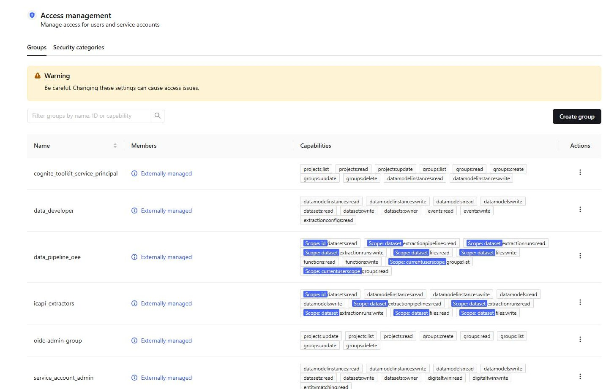
04Ce qu'on a fait, étape par étapeWhat we did, step by step
Installer le ToolkitInstall the Toolkit Local
Un environnement Python isolé (venv) avec
cognite-toolkiten version 0.6.53, celle imposée par le bootcamp.An isolated Python environment (venv) with
cognite-toolkitat version 0.6.53, the one pinned by the bootcamp.Créer les six service principalsCreate the six service principals Entra
Une App registration par rôle et par environnement, chacune avec un secret. On note le client ID et la Value du secret, qui n'est affichée qu'une seule fois.
One App registration per role and per environment, each with a secret. Note the client ID and the secret's Value, which is displayed only once.
Ajouter chaque service principal à son groupeAdd each service principal to its group Entra
Dans chacun des six groupes : Members, puis Add members.
In each of the six groups: Members, then Add members.
Écrire la configurationWrite the configuration Local
cdf.tomlfixe la version du Toolkit,config.test.yamldésigne le projet cible, les modules à déployer et leurs variables,.envcontient les secrets et les identifiants.cdf.tomlsets the Toolkit version,config.test.yamlnames the target project, the modules to deploy and their variables,.envholds the secrets and identifiers.Écrire les modulesWrite the modules Local
Trois groups, une table RAW, deux data sets et deux spaces, à raison d'un fichier YAML par ressource.
Three groups, one RAW table, two data sets and two spaces, one YAML file per resource.
Autoriser le Toolkit dans CDFAuthorise the Toolkit in CDF Fusion
Création manuelle du groupe
cognite_toolkit_service_principalavec les capabilities Projects et Groups, et pour Source ID l'Object ID du groupe Entraadmin-tk. C'est la seule ressource créée à la main.Manual creation of the group
cognite_toolkit_service_principalwith the Projects and Groups capabilities, and as Source ID the Object ID of theadmin-tkEntra group. It is the only resource created by hand.Compléter les droits du ToolkitComplete the Toolkit's rights Local
cdf auth verifyteste la connexion, liste les droits manquants et propose de les ajouter lui-même à son groupe.cdf auth verifytests the connection, lists the missing rights and offers to add them to its own group.Build, dry-run, deploy Local
cdf buildassemble les fichiers,cdf deploy --dry-runmontre ce qui changerait sans rien modifier,cdf deployapplique au projet de test.cdf buildassembles the files,cdf deploy --dry-runshows what would change without modifying anything,cdf deployapplies it to the test project.VérifierVerify Fusion Local
Contrôle du Source ID de chaque groupe et de la présence des spaces dans Fusion. Un second dry-run confirme qu'il ne reste aucun écart entre les fichiers et CDF.
Check each group's Source ID and the presence of the spaces in Fusion. A second dry-run confirms there is no difference left between the files and CDF.
Les étapes « Local » ont été réalisées avec un assistant de code IA, qui a écrit les fichiers et diagnostiqué les erreurs ; les étapes dans les portails et le déploiement final ont été faits à la main.
The "Local" steps were carried out with an AI coding assistant, which wrote the files and diagnosed the errors; the portal steps and the final deployment were done by hand.
05Ce qui a été déployé dans le projet de testWhat was deployed to the test project
| Type | RessourceResource | Fichier (sous modules/bootcamp/)File (under modules/bootcamp/) |
RésultatResult |
|---|---|---|---|
| Group | data_developer | data_foundation/auth/data_developer.Group.yaml | CrééCreated |
| Group | icapi_extractors | ice_cream_api/auth/icapi_extractors.Group.yaml | CrééCreated |
| Group | data_pipeline_oee | use_cases/oee/auth/data_pipeline_oee.Group.yaml | CrééCreated |
| Data set | ds_icapiIce Cream Factory Source Data | ice_cream_api/data_sets/data_sets.DataSet.yaml | Mis à jourUpdated |
| Data set | ds_uc_oeeOverall Equipment Effectiveness Use Case | use_cases/oee/data_sets/data_sets.DataSet.yaml | Mis à jourUpdated |
| Space | icapi_dm_space | ice_cream_api/data_models/ice_cream_data_model.space.yaml | CrééCreated |
| Space | oee_ts_space | use_cases/oee/data_models/oee_timeseries.space.yaml | CrééCreated |
| RAW | ice-cream-factory-dbtabletable assets | ice_cream_api/raw/ice-cream-factory-db.Table.yaml | Créé (base + table)Created (database + table) |
Les deux data sets existaient déjà dans le projet de test avant le bootcamp ; le déploiement n'a fait qu'aligner leur nom et leur description sur la documentation. Rien n'a été supprimé.
Both data sets already existed in the test project before the bootcamp; the deployment only aligned their name and description with the documentation. Nothing was deleted.
06Structure du projetProject layout
cdf.toml # version du Toolkit config.test.yaml # projet cible, modules, variables .env # secrets et identifiants, jamais partagé modules/bootcamp/ data_foundation/ auth/ # group data_developer ice_cream_api/ auth/ # group icapi_extractors data_sets/ # data set ds_icapi data_models/ # space icapi_dm_space raw/ # base RAW et table assets functions/ # code de l'extracteur (jour 3) use_cases/oee/ auth/ # group data_pipeline_oee data_sets/ # data set ds_uc_oee data_models/ # space oee_ts_space functions/ # code du calcul OEE (jour 3) build/ # généré par cdf build, ne pas modifier
cdf.toml # Toolkit version config.test.yaml # target project, modules, variables .env # secrets and identifiers, never shared modules/bootcamp/ data_foundation/ auth/ # group data_developer ice_cream_api/ auth/ # group icapi_extractors data_sets/ # data set ds_icapi data_models/ # space icapi_dm_space raw/ # RAW database and table assets functions/ # extractor code (day 3) use_cases/oee/ auth/ # group data_pipeline_oee data_sets/ # data set ds_uc_oee data_models/ # space oee_ts_space functions/ # OEE calculation code (day 3) build/ # generated by cdf build, do not edit
07Lire un fichier de groupReading a group file
name: icapi_extractors sourceId: {{ icapi_extractors_source_id }} capabilities: - datasetsAcl: actions: [READ] scope: idScope: ids: [{{ icapi_ds_external_id }}] # ce data set seulement - rawAcl: actions: [LIST, READ, WRITE] scope: tableScope: dbsToTables: ice-cream-factory-db: [assets] # cette table seulement # … autres capabilities
name: icapi_extractors sourceId: {{ icapi_extractors_source_id }} capabilities: - datasetsAcl: actions: [READ] scope: idScope: ids: [{{ icapi_ds_external_id }}] # this data set only - rawAcl: actions: [LIST, READ, WRITE] scope: tableScope: dbsToTables: ice-cream-factory-db: [assets] # this table only # … other capabilities
Les valeurs entre doubles accolades sont des variables. Le Toolkit les résout en trois temps : {{ variable }} dans le module, sa valeur dans config.test.yaml, qui peut elle-même renvoyer à ${VARIABLE} dans .env.
Values in double braces are variables. The Toolkit resolves them in three hops: {{ variable }} in the module, its value in config.test.yaml, which can itself point to ${VARIABLE} in .env.
Les mêmes fichiers servent donc pour le test et la production : seules les valeurs changent.
The same files therefore serve both test and production: only the values change.
08Les commandes à retenirCommands worth remembering
cdf auth verify # teste la connexion et les droits du Toolkit cdf build --env=test # assemble modules/ dans build/, ne touche pas à CDF cdf deploy --dry-run # montre ce qui changerait, ne modifie rien cdf deploy # applique au projet indiqué par CDF_PROJECT dans .env
cdf auth verify # tests the connection and the Toolkit's rights cdf build --env=test # assembles modules/ into build/, does not touch CDF cdf deploy --dry-run # shows what would change, modifies nothing cdf deploy # applies to the project named by CDF_PROJECT in .env
Toujours dans cet ordre, et toujours le test avant la production. Relancé après un déploiement, le dry-run doit annoncer que tout est inchangé.
Always in this order, and always test before production. Run again after a deployment, the dry-run should report everything as unchanged.
09Pièges rencontrés et solutionsPitfalls and fixes
| SymptômeSymptom | Cause | SolutionFix |
|---|---|---|
validation-type: Expected one of 'dev' or 'prod' | Dernière version du Toolkit installée (0.8) au lieu de celle du bootcamp. Les commandes et la configuration changent d'une version à l'autre. Latest Toolkit version installed (0.8) instead of the bootcamp's. Commands and configuration change from one version to the next. |
Installer exactement la version indiquée : cognite-toolkit==0.6.53.
Install exactly the stated version: cognite-toolkit==0.6.53. |
AADSTS7000215: Invalid client secret provided | Le Secret ID a été collé à la place de la Value du secret. The Secret ID was pasted instead of the secret's Value. |
Recréer un secret et copier aussitôt la colonne Value. Elle fait une quarantaine de caractères et contient un ~ ; le Secret ID ressemble à un identifiant avec des tirets.
Create a new secret and copy the Value column straight away. It is about forty characters long and contains a ~; the Secret ID looks like a hyphenated identifier. |
Valeurs entourées de < > dans .envValues wrapped in < > in .env | Les chevrons du gabarit ont été conservés autour de la valeur. The template's angle brackets were kept around the value. |
Écrire NOM=valeur, sans chevrons, guillemets ni espaces.
Write NAME=value, with no brackets, quotes or spaces. |
CERTIFICATE_VERIFY_FAILED: unable to get local issuer certificate | Sur le réseau de l'entreprise, le proxy de sécurité re-signe le trafic vers CDF. Windows fait confiance à ce certificat, mais Python utilise sa propre liste d'autorités. On the corporate network, the security proxy re-signs traffic to CDF. Windows trusts that certificate, but Python uses its own list of authorities. |
Installer pip-system-certs dans le venv : Python utilise alors le magasin de certificats de Windows. La vérification TLS reste active.
Install pip-system-certs in the venv: Python then uses the Windows certificate store. TLS verification stays on. |
Valid authentication token, but it does not give any access rights | Le service principal du Toolkit est reconnu, mais aucun CDF group ne lui donne de droits dans ce projet. The Toolkit's service principal is recognised, but no CDF group gives it rights in this project. |
Créer cognite_toolkit_service_principal dans Fusion (étape 6), dans le bon projet.
Create cognite_toolkit_service_principal in Fusion (step 6), in the right project. |
does not have the required capabilities | Le groupe du Toolkit n'a encore que Projects et Groups. The Toolkit's group only has Projects and Groups so far. |
Lancer cdf auth verify dans un terminal et accepter la mise à jour du groupe.
Run cdf auth verify in a terminal and accept the group update. |
10Écarts avec le parcours officielDifferences from the official path
| La doc prévoitThe docs expect | Ce qu'on a faitWhat we did |
|---|---|
| Dépôt GitHub et CodespacesGitHub repository and Codespaces | Dossier local, sans Git. La part de l'évaluation portant sur le dépôt reste à confirmer avec l'instructeur. Local folder, no Git. The part of the evaluation that looks at the repository is still to be confirmed with the instructor. |
| Poetry, Python 3.11 | pip dans un venv, Python 3.13. Sans effet sur le résultat. pip in a venv, Python 3.13. No effect on the result. |
cdf modules init | Fichiers de configuration écrits directement ; code des functions repris du paquet « Bootcamp » livré avec le Toolkit. Même contenu. Configuration files written directly; function code taken from the "Bootcamp" package shipped with the Toolkit. Same content. |
Applications nommées …-appApps named …-app | Créées sans le suffixe, donc avec le même nom que leur groupe. Sans conséquence : CDF s'appuie sur le client ID. Created without the suffix, so with the same name as their group. Harmless: CDF relies on the client ID. |
11À retenirTakeaways
- L'identité vit dans Entra, les droits dans CDF, et le Source ID relie les deux. Un Source ID erroné ne provoque aucune erreur au déploiement, seulement des accès manquants plus tard : il faut le vérifier.
- Un groupe par cas d'usage, avec des droits limités à son data set : c'est le moindre privilège appliqué à CDF.
- Tout ce qui dépend de l'environnement va dans des variables. Les fichiers des modules restent identiques entre test et production.
- Build, dry-run, deploy, puis un dry-run de contrôle. On ne déploie jamais à l'aveugle.
- Les secrets ne sortent pas de
.env, et la Value d'un secret ne s'affiche qu'une fois. - Figer la version du Toolkit : c'est un outil qui évolue vite.
- Identity lives in Entra, rights live in CDF, and the Source ID links the two. A wrong Source ID raises no error at deployment, only missing access later: check it.
- One group per use case, with rights restricted to its data set: least privilege applied to CDF.
- Anything that depends on the environment goes into variables. The module files stay identical between test and production.
- Build, dry-run, deploy, then a control dry-run. Never deploy blind.
- Secrets never leave
.env, and a secret's Value is shown only once. - Pin the Toolkit version: it is a fast-moving tool.
12Et pour la productionAnd for production
- Créer
config.prod.yamlà partir deconfig.test.yaml, avec le projet de production. - Mettre les valeurs de production dans un fichier séparé,
.env.prod: projet, client IDs, secrets et Object IDs des groupesprod. - Créer
cognite_toolkit_service_principaldans le projet de production, puis lancercdf auth verify. - Build, dry-run, puis deploy sur la production.
- Create
config.prod.yamlfromconfig.test.yaml, pointing at the production project. - Put the production values in a separate file,
.env.prod: project, client IDs, secrets and Object IDs of theprodgroups. - Create
cognite_toolkit_service_principalin the production project, then runcdf auth verify. - Build, dry-run, then deploy to production.
Fait le 5 octobre. Le déroulé complet du passage en production est décrit dans l'onglet Jour 3.
Done on 5 October. The full production rollout is described in the Day 3 tab.
Jour 2 — Data Integration A et Data ModelingDay 2 — Data Integration A and Data Modeling
réalisé le lundi 5 octobre 2026completed on Monday 5 October 202601Objectif du jourGoal of the day
Faire entrer les premières données dans CDF et leur donner une structure. Deux extracteurs vont chercher les équipements et la liste des séries temporelles dans l'API de l'usine ; deux transformations en font ensuite une hiérarchie d'équipements à laquelle chaque série temporelle est rattachée.
Bring the first data into CDF and give it a structure. Two extractors fetch the assets and the list of time series from the plant's API; two transformations then turn them into an asset hierarchy to which every time series is linked.
À la fin du jour, on peut naviguer dans CDF du site jusqu'à l'unité de production et voir les séries qui la décrivent. Les valeurs de ces séries arriveront le jour 3.
By the end of the day you can browse in CDF from the site down to the production unit and see the series that describe it. The values of those series arrive on day 3.
02Les notions, en clairThe concepts, in plain words
| TermeTerm | Ce que c'estWhat it is |
|---|---|
| Hosted extractor | Extracteur qui tourne dans CDF lui-même, sans serveur à installer. Il interroge une source à intervalle régulier et écrit le résultat dans CDF. Il est prévu pour des flux réguliers à faible latence. An extractor that runs inside CDF itself, with no server to install. It polls a source at a regular interval and writes the result to CDF. It is meant for steady, low-latency data streams. |
| Source | L'adresse du système interrogé : ici l'API REST de l'usine. The address of the system being polled: here the plant's REST API. |
| Destination | Les identifiants avec lesquels l'extracteur écrit dans CDF. C'est le service principal des extracteurs, donc ses droits et pas davantage. The credentials the extractor uses to write to CDF. It is the extractors' service principal, so its rights and no more. |
| Mapping | Petite formule qui traduit chaque élément renvoyé par la source en objet CDF : une ligne RAW, ou un nœud du data model. A small formula that translates each item returned by the source into a CDF object: a RAW row, or a data model node. |
| Job | Ce qui relie source, mapping et destination, avec le chemin à appeler et la fréquence. What ties source, mapping and destination together, with the path to call and the frequency. |
| Transformation | Requête SQL (Spark SQL) exécutée par CDF, qui lit des données, par exemple dans RAW, et les écrit sous forme structurée dans le data model. A SQL query (Spark SQL) executed by CDF, which reads data, for example from RAW, and writes it in structured form into the data model. |
| Core Data Model |
Modèle de données standard fourni par Cognite, avec des types prêts à l'emploi : CogniteAsset pour un équipement, CogniteTimeSeries pour une série temporelle.
The standard data model supplied by Cognite, with ready-made types: CogniteAsset for an asset, CogniteTimeSeries for a time series. |
| ContextualisationContextualisation | Le fait de relier des données de natures différentes, ici chaque série temporelle à l'équipement qu'elle mesure. Linking data of different kinds, here each time series to the asset it measures. |
| Planification (schedule)Schedule |
Expression cron qui lance une transformation automatiquement, par exemple 33 0 * * * pour tous les jours à 00:33.
A cron expression that runs a transformation automatically, for example 33 0 * * * for every day at 00:33. |
Le data modeling, plus précisémentData modeling, in more detail
CDF est passé d'un modèle unique, centré sur les équipements, à des data models libres que l'on peut étendre. Le Core Data Model en est le socle standard.
CDF moved from a single, asset-centric model to open data models that can be extended. The Core Data Model is their standard foundation.
CogniteAsset, CogniteTimeSeriescdf_cdmin the system space cdf_cdm| TermeTerm | Ce que c'estWhat it is |
|---|---|
| Container | Là où les propriétés sont réellement stockées, comme une table. Non versionné. Where the properties are actually stored, like a table. Not versioned. |
| View |
La façon de lire et d'écrire les données : une sélection de propriétés prises dans un ou plusieurs containers, plus des liens vers d'autres views. Versionnée. CogniteAsset et CogniteTimeSeries sont des views.
The way data is read and written: a selection of properties taken from one or more containers, plus links to other views. Versioned. CogniteAsset and CogniteTimeSeries are views. |
| Data model |
Un ensemble de views, versionné. Ici le Core Data Model, rangé dans le space système cdf_cdm.
A set of views, versioned. Here the Core Data Model, kept in the system space cdf_cdm. |
| Instance | Un objet réel du modèle : soit un node (un équipement, une série), soit un edge (un lien typé entre deux nodes). Une instance appartient à un seul space. An actual object of the model: either a node (an asset, a series) or an edge (a typed link between two nodes). An instance belongs to exactly one space. |
| Relation directeDirect relation |
Propriété qui pointe vers un autre node, comme une clé étrangère : parent pour un équipement, assets pour une série. C'est ce qu'écrivent nos deux transformations.
A property pointing to another node, like a foreign key: parent for an asset, assets for a series. This is what our two transformations write. |
| Relation inverseReverse relation |
Propriété tenue à jour par CDF dans l'autre sens : children et timeSeries d'un équipement. path et root sont eux aussi calculés par CDF.
A property kept up to date by CDF in the other direction: an asset's children and timeSeries. path and root are computed by CDF as well. |
| ExtensionExtension |
Créer sa propre view, qui implémente une view du Core Data Model et lui ajoute des propriétés. Le support de formation montre ainsi une view IceCreamAsset ; nous ne l'avons pas déployée, nos équipements sont de simples CogniteAsset.
Creating your own view, which implements a Core Data Model view and adds properties to it. The training deck shows an IceCreamAsset view this way; we did not deploy it, our assets are plain CogniteAsset. |
03Le trajet des donnéesThe path of the data
Les équipements passent par RAW, puis sont structurésAssets go through RAW, then get structured
/site/all/csvassets, 1021 lignestable assets, 1021 rowsLes séries temporelles sont créées directement, puis rattachéesTime series are created directly, then linked
/timeseries/oee04Ce qu'on a fait, étape par étapeWhat we did, step by step
Écrire les hosted extractorsWrite the hosted extractors Local
Une source commune, puis pour chacun des deux extracteurs une destination, un mapping et un job : sept fichiers YAML.
One shared source, then for each of the two extractors a destination, a mapping and a job: seven YAML files.
Build, dry-run, deploy Local
Les sept ressources sont créées. Les jobs démarrent aussitôt, et échouent tous les deux avec une erreur 403.
The seven resources are created. The jobs start straight away, and both fail with a 403 error.
Corriger l'appartenance au groupeFix the group membership Entra
Le service principal des extracteurs n'avait pas été ajouté à son groupe Entra : il s'authentifiait, mais sans aucun droit dans CDF.
The extractors' service principal had not been added to its Entra group: it authenticated, but with no rights at all in CDF.
Relancer les jobsRe-run the jobs Local
Un job ne retente qu'à son intervalle. Pour ne pas attendre, on modifie temporairement cet intervalle et on redéploie : le job repart immédiatement. Les valeurs de la doc sont ensuite remises.
A job only retries at its interval. To avoid waiting, change that interval temporarily and redeploy: the job restarts immediately. The documented values are then restored.
Contrôler la table RAWCheck the RAW table Local
Avant toute transformation : nombre de lignes, unicité des clés, forme des lignes sans parent, existence de chaque parent.
Before any transformation: row count, key uniqueness, shape of the rows with no parent, existence of every parent.
Écrire les transformationsWrite the transformations Local
Pour chacune, un fichier YAML (destination, identifiants d'exécution) et un fichier SQL de même nom ; plus un fichier de planification pour la hiérarchie.
For each, one YAML file (destination, run credentials) and one SQL file with the same name; plus a schedule file for the hierarchy.
Build, dry-run, deploy Local
Deux transformations et une planification sont créées. Le déploiement les installe sans les exécuter.
Two transformations and one schedule are created. Deployment installs them without running them.
Exécuter les transformationsRun the transformations Fusion
D'abord la hiérarchie des équipements, puis la contextualisation des séries : les équipements doivent exister avant qu'on y rattache quoi que ce soit.
First the asset hierarchy, then the contextualisation of the series: the assets must exist before anything is linked to them.
Vérifier le résultatVerify the result Local Fusion
Comptages et recherche de liens manquants, détaillés au bloc 08.
Counts and a search for missing links, detailed in block 08.
05Ce qui a été déployé dans le projet de testWhat was deployed to the test project
| Type | RessourceResource | Fichier (sous modules/bootcamp/ice_cream_api/)File (under modules/bootcamp/ice_cream_api/) |
RôleRole |
|---|---|---|---|
| Source | Ice Cream Factory API | hosted_extractors/Ice Cream Factory API/Source.yaml | Adresse de l'API, commune aux deux extracteurs.API address, shared by both extractors. |
| Destination, Mapping, Job | ICAPI Assets | hosted_extractors/Ice Cream Factory API/assets/ | Charge le CSV des équipements dans la table RAW, une fois par jour.Loads the assets CSV into the RAW table, once a day. |
| Destination, Mapping, Job | ICAPI Time series | hosted_extractors/Ice Cream Factory API/timeseries/ | Crée les CogniteTimeSeries, toutes les heures.Creates the CogniteTimeSeries, every hour. |
| Transformation | create_asset_hierarchy | transformations/create_asset_hierarchy.Transformation.yaml + .sql | Construit les CogniteAsset et leur lien parent.Builds the CogniteAsset nodes and their parent link. |
| Schedule | create_asset_hierarchy | transformations/create_asset_hierarchy.schedule.yaml | Relance la hiérarchie chaque nuit à 00:33.Re-runs the hierarchy every night at 00:33. |
| Transformation | contextualize_ts_assets | transformations/contextualize_ts_assets.Transformation.yaml + .sql | Rattache chaque série temporelle à son équipement. Non planifiée : un workflow la déclenchera.Links each time series to its asset. Not scheduled: a workflow will trigger it. |
06Lire un mappingReading a mapping
input.map(row => {
"type": "raw_row",
"table": "assets",
"database": "ice-cream-factory-db",
"key": row.external_id,
"columns": row
})
Le CSV arrive sous forme de liste de lignes. Pour chacune, le mapping fabrique une ligne RAW : la clé est l'external_id de l'équipement, et toutes les colonnes sont conservées telles quelles.
The CSV arrives as a list of rows. For each one, the mapping builds a RAW row: the key is the asset's external_id, and every column is kept as it is.
Choisir une clé stable est ce qui rend l'extraction rejouable : la même ligne est remplacée, jamais dupliquée.
Choosing a stable key is what makes the extraction replayable: the same row is replaced, never duplicated.
07Lire une transformationReading a transformation
select `external_id` as externalId, `name` as name, `description` as description, if( `parent_external_id` == '' OR `parent_external_id` == null, null, node_reference('icapi_dm_space', `parent_external_id`) ) as parent from `ice-cream-factory-db`.`assets`
Chaque colonne du résultat porte le nom d'une propriété de CogniteAsset. node_reference crée le lien vers l'équipement parent ; les sites, qui n'ont pas de parent, reçoivent une valeur nulle et deviennent les racines.
Each column of the result is named after a property of CogniteAsset. node_reference creates the link to the parent asset; the sites, which have no parent, get a null value and become the roots.
La contextualisation suit la même logique : l'identifiant d'une série, par exemple HAPRAG10TA812:count, contient celui de son équipement avant les deux-points.
Contextualisation follows the same logic: a series identifier, for example HAPRAG10TA812:count, contains its asset's identifier before the colon.
08Résultats vérifiésVerified results
| ContrôleCheck | AttenduExpected | ConstatéFound | |
|---|---|---|---|
Lignes dans la table RAW assets, clés uniquesRows in the RAW table assets, unique keys | 1021 | 1021 | OK |
Équipements CogniteAsset créésCogniteAsset nodes created | 1021 | 1021 | OK |
| Racines de la hiérarchie (les sites)Hierarchy roots (the sites) | 10 | 10 | OK |
| Équipements dont le parent est introuvableAssets whose parent cannot be found | 0 | 0 | OK |
| Séries temporelles crééesTime series created | 2512 | 2512 | OK |
| Séries rattachées à exactement un équipementSeries linked to exactly one asset | 2512 | 2512 | OK |
| Liens vers un mauvais équipement ou un équipement absentLinks to the wrong asset or to a missing one | 0 | 0 | OK |
Les 2512 séries se répartissent en 628 unités de production suivies chacune par quatre séries : count, good, status et planned_status. Les valeurs attendues (1021 et 2512) sont celles annoncées par la documentation du bootcamp.
The 2512 series break down into 628 production units, each tracked by four series: count, good, status and planned_status. The expected values (1021 and 2512) are those stated in the bootcamp documentation.
Dans Fusion, projet de production, le 6 octobre 2026In Fusion, production project, 6 October 2026
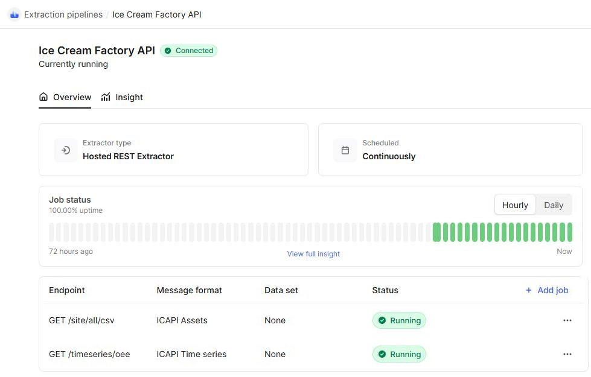
/site/all/csv et /timeseries/oee, sont « Running ».The hosted extractor. Connected, scheduled continuously, 100% uptime. Its two jobs, /site/all/csv and /timeseries/oee, are "Running".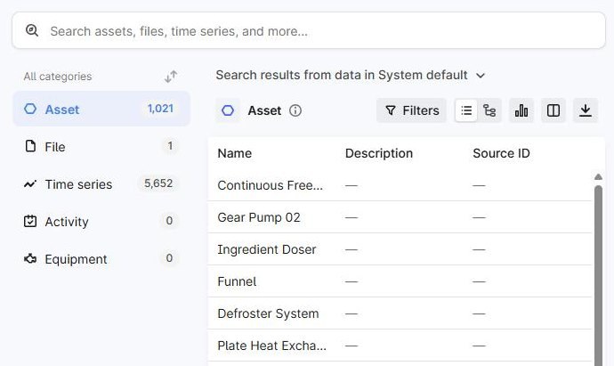
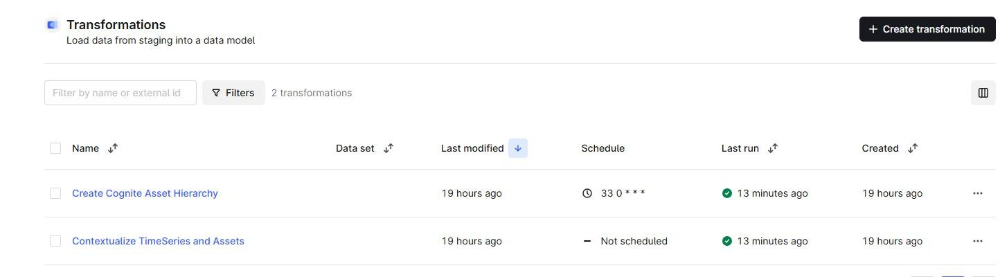
09Pièges rencontrés et solutionsPitfalls and fixes
| SymptômeSymptom | Cause | SolutionFix |
|---|---|---|
Job en cdf_write_error : 403: Subject does not have 'WRITE' action ou Not allowed to perform schema action: READJob in cdf_write_error: 403: Subject does not have 'WRITE' action or Not allowed to perform schema action: READ | Le service principal de la destination s'authentifie, mais n'appartient à aucun CDF group : il n'a pas été ajouté à son groupe Entra. Le CDF group et son Source ID étaient pourtant corrects. The destination's service principal authenticates, but belongs to no CDF group: it was never added to its Entra group. The CDF group and its Source ID were correct all along. | Ajouter l'application au groupe Entra. Pour le diagnostic, demander à CDF quels groupes le compte obtient réellement (inspection du jeton) plutôt que de relire la configuration. Add the application to the Entra group. To diagnose, ask CDF which groups the account actually gets (token inspection) rather than re-reading the configuration. |
Après correction, le job reste en waiting et n'extrait rienAfter the fix, the job stays in waiting and extracts nothing | Un job ne retente qu'à son intervalle, soit un jour pour les équipements. Le redéployer sans changement ou le mettre en pause puis le reprendre ne le relance pas. A job only retries at its interval, one day for the assets. Redeploying it unchanged, or pausing and resuming it, does not re-run it. |
Modifier le job, par exemple son interval, et redéployer : il repart aussitôt. Remettre ensuite la valeur d'origine.
Change the job, for example its interval, and redeploy: it restarts at once. Then restore the original value. |
| Le dry-run annonce toujours la source et les destinations comme modifiéesThe dry-run always reports the source and the destinations as changed | Le Toolkit ne peut pas relire des identifiants stockés dans CDF ; il les considère donc toujours comme différents. The Toolkit cannot read back credentials stored in CDF, so it always treats them as different. | Ce n'est pas un écart. Pour ces ressources, le contrôle se fait sur le statut des jobs et sur les données. It is not a real difference. For these resources, check the job status and the data instead. |
| Risque de ressources en doubleRisk of duplicate resources | La doc fait créer l'extracteur et la transformation à la main dans l'interface, puis à nouveau avec le Toolkit. Les identifiants générés par l'interface peuvent différer. The docs have you create the extractor and the transformation by hand in the UI, then again with the Toolkit. The identifiers generated by the UI may differ. | Créer directement avec le Toolkit, puis ouvrir la ressource dans l'interface pour l'explorer et l'exécuter. Create directly with the Toolkit, then open the resource in the UI to explore and run it. |
10À retenirTakeaways
- Un statut « déployé » ne dit rien des données. Après chaque étape, on compte : lignes, objets créés, liens manquants.
- RAW n'impose aucun schéma et ne signale pas une clé incohérente. Contrôler la table avant de transformer évite des liens vides découverts trop tard.
- Quand un accès est refusé, la question utile est « quels droits ce compte obtient-il réellement ? ». La chaîne Entra → Source ID → CDF group peut casser à trois endroits.
- L'ordre d'exécution compte : les équipements d'abord, la contextualisation ensuite. C'est ce que l'orchestration automatisera.
- Une clé stable rend chaque étape rejouable sans doublon.
- A "deployed" status says nothing about the data. After each step, count: rows, objects created, missing links.
- RAW enforces no schema and does not flag an inconsistent key. Checking the table before transforming avoids empty links discovered too late.
- When access is denied, the useful question is "which rights does this account actually get?". The Entra → Source ID → CDF group chain can break in three places.
- Execution order matters: assets first, contextualisation second. This is what orchestration will automate.
- A stable key makes every step replayable without duplicates.
11Écarts et suiteDifferences and next steps
Par rapport au parcours officiel, les exercices de création dans l'interface ont été remplacés par un déploiement direct avec le Toolkit ; les transformations ont bien été exécutées dans Fusion. Le déploiement se fait en local, sans GitHub Actions.
Compared with the official path, the UI creation exercises were replaced by a direct deployment with the Toolkit; the transformations were run in Fusion as documented. Deployment is done locally, without GitHub Actions.
- Alimenter les séries temporelles en valeurs : fait au jour 3, par la function d'extraction.
- Rejouer le jour 2 sur le projet de production, en vérifiant d'abord l'appartenance des service principals à leurs groupes : fait.
- Feed the time series with values: done on day 3, by the extraction function.
- Replay day 2 on the production project, checking first that the service principals belong to their groups: done.
Jour 3 — Data Integration B et OrchestrationDay 3 — Data Integration B and Orchestration
réalisé le lundi 5 octobre 2026completed on Monday 5 October 202601Objectif du jourGoal of the day
Les séries temporelles existaient mais étaient vides. Le jour 3 les alimente en valeurs, calcule l'OEE à partir d'elles, puis met tout le pipeline sous le contrôle d'un workflow qui exécute les étapes dans le bon ordre.
The time series existed but were empty. Day 3 feeds them with values, calculates OEE from them, then puts the whole pipeline under the control of a workflow that runs the steps in the right order.
À la fin du jour, les données se mettent à jour seules : on a un pipeline qui tourne, pas seulement des objets déployés.
By the end of the day the data refreshes on its own: there is a running pipeline, not just deployed objects.
02Les notions, en clairThe concepts, in plain words
| TermeTerm | Ce que c'estWhat it is |
|---|---|
| Extraction pipeline | Un tableau de suivi, pas un extracteur. Les extracteurs y déposent le compte rendu de chaque exécution (vu, réussi, échoué), ce qui permet de surveiller et d'alerter. C'est aussi la fiche d'identité de l'intégration : sa source, son data set, les personnes à contacter. A monitoring record, not an extractor. Extractors report each run to it (seen, success, failure), which allows monitoring and alerting. It is also the identity card of the integration: its source, its data set, the people to contact. |
| Cognite Function |
Du code Python hébergé et exécuté par CDF, à la demande ou sur planification. Le point d'entrée est toujours un fichier handler.py avec une fonction handle(client, data).
Python code hosted and run by CDF, on demand or on a schedule. The entry point is always a handler.py file with a handle(client, data) function. |
client, data |
client est une connexion à CDF déjà ouverte, avec les droits de celui qui appelle la function. data contient les paramètres de l'appel, par exemple les sites à traiter.
client is a ready-made connection to CDF, with the rights of whoever calls the function. data holds the call's parameters, for example the sites to process. |
| Backfill, frontfill, streaming | Backfill : charger l'historique antérieur au premier point présent dans CDF. Frontfill : charger ce qui s'est ajouté depuis le dernier point. Streaming : ajouter les points au fil de l'eau, en temps réel. Charger d'un coup tout l'historique de toutes les séries n'est pas possible : la function reçoit des paramètres (sites, nombre d'heures) pour répartir la charge. Backfill: load the history before the first point present in CDF. Frontfill: load what has been added since the last point. Streaming: add points as they come, in real time. Loading the whole history of every series at once is not possible: the function takes parameters (sites, number of hours) to spread the load. |
| OEE | Overall Equipment Effectiveness, indicateur de performance d'une machine : produit de la qualité, de la performance et de la disponibilité. Overall Equipment Effectiveness, a machine performance indicator: the product of quality, performance and availability. |
| Data workflow | Service d'orchestration de CDF : il enchaîne des tâches (transformations, functions, tâches dynamiques, appels à l'API de CDF) en respectant leurs dépendances, et garde l'historique de chaque exécution. CDF's orchestration service: it chains tasks (transformations, functions, dynamic tasks, requests to the CDF API) according to their dependencies, and keeps the history of every execution. |
dependsOn | Déclare qu'une tâche ne démarre qu'après la réussite d'une autre. C'est ce qui fixe l'ordre. Declares that a task only starts after another one has succeeded. This is what sets the order. |
| Trigger | Ce qui lance le workflow, ici une expression cron toutes les 15 minutes, avec les identifiants du compte qui exécutera les tâches. What starts the workflow, here a cron expression every 15 minutes, with the credentials of the account that will run the tasks. |
path | Propriété calculée par CDF pour chaque équipement : la liste de ses ancêtres depuis le site. Elle sert à retrouver tout ce qui se trouve sous un équipement. A property computed by CDF for each asset: the list of its ancestors from the site down. It is used to find everything located under an asset. |
03Le calcul de l'OEEHow OEE is calculated
Quatre séries mesurées par unité en entrée, cinq séries calculées en sortie.
Four measured series per unit as input, five calculated series as output.
L'OEE mesure la part du temps de production planifié qui est réellement productive. 100 % correspond à une production parfaite : uniquement des pièces conformes, à la cadence maximale, sans arrêt. On s'en sert pour suivre la réduction des pertes sur une machine, et pour comparer des lignes, des équipes ou un standard du secteur.
OEE measures the share of planned production time that is truly productive. 100% is a perfect production: only conforming items, at the maximum rate, with no downtime. It is used to track the reduction of losses on a machine, and to compare lines, shifts or an industry standard.
| Série calculéeCalculated series | Formule, par minuteFormula, per minute |
|---|---|
quality | good / count |
performance | (count / status) / 20 |
availability | status / planned_status |
oee | quality × performance × availability |
off_spec | count − good |
count compte les pièces produites, good les pièces conformes, status indique si la machine tourne et planned_status si elle devait tourner. Le 20 est la cadence idéale : une pièce toutes les trois secondes.
count counts the items produced, good the conforming ones, status says whether the machine is running and planned_status whether it was meant to. The 20 is the ideal rate: one item every three seconds.
04Le workflowThe workflow
Quatre tâches, chacune attendant la réussite de la précédente. Déclenchement toutes les 15 minutes.
Four tasks, each waiting for the previous one to succeed. Triggered every 15 minutes.
create_asset_hierarchytransformation : les équipements et leur hiérarchietransformation: the assets and their hierarchycontextualize_ts_assetstransformation : rattache les séries aux équipementstransformation: links the series to the assetsicapi_datapoints_extractorfunction : charge la dernière heure de valeursfunction: loads the last hour of valuesoee_timeseriesfunction : calcule l'OEE sur la dernière heurefunction: calculates OEE over the last hourPremière exécution : 3 min 52 s au total, les quatre tâches réussies.
First execution: 3 min 52 s in total, all four tasks succeeded.
05Ce qu'on a fait, étape par étapeWhat we did, step by step
Écrire l'extraction pipeline, les functions et leurs planificationsWrite the extraction pipeline, the functions and their schedules Local
Le code Python des deux functions est fourni par le bootcamp ; il reste à les déclarer en YAML, à fixer la version du SDK et à définir quand elles tournent.
The Python code of both functions is supplied by the bootcamp; what remains is to declare them in YAML, pin the SDK version and define when they run.
Lire le code avant de l'exécuterRead the code before running it Local
La lecture montre que les functions retrouvent les séries d'un site grâce au
pathdes équipements, et que l'extracteur intercepte ses propres erreurs. Deux informations décisives pour la suite.Reading it shows that the functions find a site's series through the assets'
path, and that the extractor swallows its own errors. Two facts that proved decisive later.Contrôler la donnée dont dépend le codeCheck the data the code depends on Local
Le
pathétait absent ou tronqué pour 182 équipements sur 1021 : 480 séries auraient été ignorées en silence.The
pathwas missing or truncated for 182 of 1021 assets: 480 series would have been silently skipped.Réparer les cheminsRepair the paths Local
Un script détache puis rattache chaque équipement concerné à son parent, du haut de la hiérarchie vers le bas, après un essai sur un seul équipement.
A script detaches then re-attaches each affected asset to its parent, from the top of the hierarchy down, after a trial on a single asset.
Build, dry-run, deploy Local
CDF construit ensuite les functions, ce qui prend quelques minutes avant qu'elles soient utilisables.
CDF then builds the functions, which takes a few minutes before they can be used.
Charger l'historique des valeursLoad the value history Fusion
Trois appels manuels de l'extracteur, par lots de quatre sites au plus, sur 336 heures.
Three manual calls to the extractor, in batches of at most four sites, over 336 hours.
Calculer l'OEE sur l'historiqueCalculate OEE over the history Fusion
Deux appels manuels de la function OEE, cinq sites chacun, sur sept jours. Elle crée elle-même ses séries de résultat.
Two manual calls to the OEE function, five sites each, over seven days. It creates its own result series.
Écrire et déployer le workflowWrite and deploy the workflow Local
Trois fichiers de même préfixe : l'identité, la liste des tâches avec leurs dépendances, et le déclencheur.
Three files with the same prefix: the identity, the task list with its dependencies, and the trigger.
Suivre la première exécutionFollow the first execution Local Fusion
Statut de chaque tâche, puis recontrôle des chemins et des rattachements, puisque le workflow rejoue les transformations.
Status of each task, then a re-check of paths and links, since the workflow replays the transformations.
06Ce qui a été déployé dans le projet de testWhat was deployed to the test project
| Type | RessourceResource | Fichier (sous modules/bootcamp/)File (under modules/bootcamp/) |
RôleRole |
|---|---|---|---|
| Extraction pipeline | ep_icapi_datapoints | ice_cream_api/extraction_pipelines/ | Reçoit le compte rendu de chaque exécution de l'extracteur.Receives the report of each extractor run. |
| Function | icapi_datapoints_extractor | ice_cream_api/functions/ | Charge les valeurs des séries depuis l'API.Loads the series values from the API. |
| Schedules | 2 planifications2 schedules | ice_cream_api/functions/schedules.Schedule.yaml | Toutes les 10 minutes sur la dernière heure ; chaque nuit à 00:33 sur cinq jours pour combler les trous.Every 10 minutes over the last hour; every night at 00:33 over five days to fill gaps. |
| Function | oee_timeseries | use_cases/oee/functions/ | Calcule les cinq séries OEE de chaque unité.Calculates the five OEE series of each unit. |
| Schedule | 1 planification1 schedule | use_cases/oee/functions/schedules.Schedule.yaml | Toutes les 5 minutes sur la dernière heure.Every 5 minutes over the last hour. |
| Workflow | wf_icapi_data_pipeline | ice_cream_api/workflows/ | Identité, version 1 avec ses quatre tâches, et déclencheur icapi_trigger.Identity, version 1 with its four tasks, and the icapi_trigger trigger. |
07Lire une planification de functionReading a function schedule
- name: Frontfill every 10 minutes ... functionExternalId: icapi_datapoints_extractor cronExpression: "*/10 * * * *" data: hours: 1 authentication: clientId: {{ icapi_extractors_client_id }} clientSecret: {{ icapi_extractors_client_secret }}
data est ce que la function recevra à chaque appel. authentication désigne le compte sous lequel elle tournera : elle aura ses droits, et rien de plus.
data is what the function receives on each call. authentication names the account it will run as: it gets that account's rights, and nothing more.
Une même function sert donc à plusieurs usages, simplement en changeant data et la fréquence.
The same function therefore serves several purposes, simply by changing data and the frequency.
08Lire une tâche de workflowReading a workflow task
- externalId: oee_timeseries_task type: function parameters: function: externalId: oee_timeseries data: { "lookback_minutes": 60 } retries: 3 timeout: 3600 onFailure: abortWorkflow dependsOn: - externalId: icapi_datapoints_extractor_task
Le type et la première clé sous parameters doivent correspondre : function ou transformation. Nommer la tâche d'après ce qu'elle appelle rend l'historique lisible.
The type and the first key under parameters must match: function or transformation. Naming the task after what it calls keeps the run history readable.
Pour une transformation, concurrencyPolicy dit quoi faire si elle tourne déjà : fail par défaut, waitForCurrent ou restartAfterCurrent.
For a transformation, concurrencyPolicy says what to do if it is already running: fail by default, waitForCurrent or restartAfterCurrent.
09Résultats vérifiésVerified results
| ContrôleCheck | AttenduExpected | ConstatéFound | |
|---|---|---|---|
Équipements dont le path est complet, après réparationAssets with a complete path, after the repair | 1021 | 1021 | OK |
| Comptes rendus d'extraction en échecFailed extraction run reports | 0 | 0 | OK |
| Séries mesurées contenant des valeursMeasured series containing values | 2512 | 2512 | OK |
| Séries OEE crééesOEE series created | 3140 | 3140 | OK |
| Séries OEE contenant des valeursOEE series containing values | 3140 | 3140 | OK |
| Total des séries temporellesTotal time series | 5652 | 5652 | OK |
| Tâches réussies à la première exécution du workflowTasks succeeded on the workflow's first execution | 4 | 4 | OK |
Les 3140 séries OEE correspondent à 628 unités × 5 séries. Le total de 5652 est celui annoncé par la documentation du bootcamp. Sur un échantillon, les compteurs contiennent 20 161 points (14 jours à la minute) et les séries OEE 10 161 points (7 jours).
The 3140 OEE series are 628 units × 5 series. The total of 5652 is the one stated in the bootcamp documentation. On a sample, the counters hold 20,161 points (14 days at one per minute) and the OEE series 10,161 points (7 days).
Dans Fusion, projet de production, le 6 octobre 2026In Fusion, production project, 6 October 2026
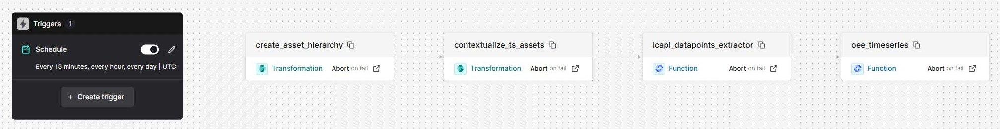
wf_icapi_data_pipeline. Un déclencheur toutes les 15 minutes, puis quatre tâches en chaîne : deux transformations, deux functions. « Abort on fail » : si une tâche échoue, le workflow s'arrête.The wf_icapi_data_pipeline workflow. A trigger every 15 minutes, then four chained tasks: two transformations, two functions. "Abort on fail": if a task fails, the workflow stops.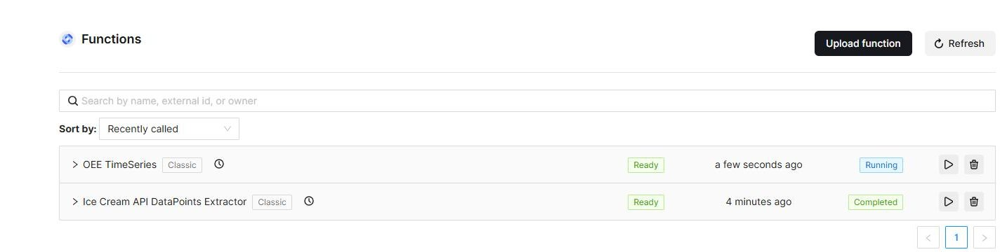
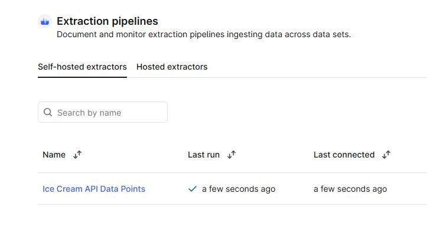
ep_icapi_datapoints, nommée « Ice Cream API Data Points » : dernier compte rendu reçu à l'instant, en succès.The extraction pipeline. ep_icapi_datapoints, named "Ice Cream API Data Points": last report received just now, a success.10Pièges rencontrés et solutionsPitfalls and fixes
| SymptômeSymptom | Cause | SolutionFix |
|---|---|---|
Des équipements ont un path vide ou tronqué alors que leurs liens parent sont justes ; les functions ignorent leurs séries sans le signalerSome assets have an empty or truncated path although their parent links are right; the functions skip their series without saying so |
CDF calcule le path au moment où le parent est écrit, d'après ce qui existe à cet instant. La transformation écrit toute la hiérarchie d'un coup : un enfant écrit avant son parent reste incomplet. La relancer ne change rien, car une réécriture à l'identique ne déclenche aucun recalcul.
CDF computes the path when the parent is written, from what exists at that moment. The transformation writes the whole hierarchy at once: a child written before its parent stays incomplete. Re-running it changes nothing, because an identical rewrite triggers no recalculation. |
Provoquer un vrai changement du parent : détacher puis rattacher chaque équipement concerné, niveau par niveau en partant des sites. Le recalcul suit en quelques secondes. Contrôle : comparer le path à la chaîne réelle des parents.
Force a real change of the parent: detach then re-attach each affected asset, level by level starting from the sites. The recalculation follows within seconds. Check: compare the path with the real chain of parents. |
| Un appel de function affiche « Completed » alors qu'il a peut-être échouéA function call shows "Completed" although it may have failed | Le code de l'extracteur intercepte ses exceptions et les signale à l'extraction pipeline au lieu de les laisser remonter. The extractor's code catches its exceptions and reports them to the extraction pipeline instead of letting them surface. | Lire le résultat dans les exécutions de l'extraction pipeline, puis vérifier que les séries contiennent bien des valeurs. Read the outcome in the extraction pipeline's runs, then check that the series really contain values. |
| Les séries OEE de certaines unités s'arrêtent plusieurs jours en arrièreThe OEE series of some units stop several days back |
Le calcul s'arrête au plus ancien des derniers points des quatre séries d'entrée. Or status et planned_status n'écrivent qu'aux changements d'état de la machine.
The calculation stops at the oldest of the latest points of the four input series. But status and planned_status only write when the machine changes state. | C'est le comportement du code fourni, pas une anomalie de chargement. Choisir une période assez large pour l'analyse. This is how the supplied code behaves, not a loading fault. Choose a wide enough period for the analysis. |
| Les functions restent « Deploying » après le déploiementThe functions stay "Deploying" after deployment | CDF construit l'environnement Python de chaque function, ce qui prend plusieurs minutes. CDF builds the Python environment of each function, which takes several minutes. | Attendre le statut « Ready » avant le premier appel manuel. Wait for the "Ready" status before the first manual call. |
11À retenirTakeaways
- Lire le code avant de l'exécuter. C'est en le lisant qu'on a vu sa dépendance au
pathet sa façon de masquer les erreurs. - Un code qui ne trouve rien ne plante pas forcément : il traite moins, en silence. Seul un comptage contre une valeur attendue le révèle.
- Certaines valeurs sont calculées par la plateforme, pas par nous. Il faut savoir quand elle les calcule, et les contrôler comme le reste.
- Chercher le statut là où il est réellement écrit : ici dans l'extraction pipeline, pas dans l'état de l'appel.
- Planifier chaque brique séparément ne garantit aucun ordre. C'est le workflow qui transforme des pièces en pipeline.
- Tester une correction sur un seul objet avant de l'appliquer à tous, et garder une sauvegarde.
- Read the code before running it. Reading is what revealed its dependency on
pathand its habit of hiding errors. - Code that finds nothing does not necessarily crash: it processes less, silently. Only a count against an expected value reveals it.
- Some values are computed by the platform, not by us. You need to know when it computes them, and check them like everything else.
- Look for the status where it is actually written: here in the extraction pipeline, not in the call's state.
- Scheduling each building block separately guarantees no order. The workflow is what turns parts into a pipeline.
- Try a fix on a single object before applying it to all, and keep a backup.
12Écarts et suiteDifferences and next steps
Le test local des functions proposé par la doc a été laissé de côté : elle le signale elle-même comme défaillant et facultatif. La réparation des chemins n'est pas dans le parcours officiel. Le déploiement en production s'est fait en local, sans GitHub Actions.
The local function test suggested by the docs was skipped: the docs themselves flag it as faulty and optional. The path repair is not part of the official path. Deployment to production was done locally, without GitHub Actions.
- Rejouer l'ensemble sur le projet de production, en contrôlant les chemins après la première exécution du workflow : fait, voir le bloc 13.
- Relancer les chargements d'historique en production : valeurs sur 336 heures, OEE sur 14 jours : fait.
- Exploiter les données dans Charts et Canvas : fait, voir l'onglet Jour 4.
- Replay everything on the production project, checking the paths after the workflow's first execution: done, see block 13.
- Re-run the history loads in production: values over 336 hours, OEE over 14 days: done.
- Use the data in Charts and Canvas: done, see the Day 4 tab.
13Passage en productionProduction rollout
Le même code, rejoué sur un second projet. C'est le test de tout ce qui précède : si la configuration est vraiment écrite dans des fichiers, la production ne demande que de nouvelles valeurs. La doc le fait avec GitHub Actions ; ici les mêmes commandes ont été lancées en local.
The same code, replayed on a second project. It is the test of everything above: if the configuration really is written in files, production only needs new values. The docs do it with GitHub Actions; here the same commands were run locally.
Ce qui change entre test et productionWhat changes between test and production
| Test | ProductionProduction | |
|---|---|---|
| Fichiers des modulesModule files | identiquesidentical | |
| ConfigurationConfiguration | config.test.yaml | config.prod.yaml |
| Secrets et identifiantsSecrets and identifiers | .env | .env.prod |
| Dossier de buildBuild folder | build/ | build_prod/ |
Le fichier de secrets et le dossier de build de la production doivent être nommés explicitement dans chaque commande. Un cdf deploy ordinaire ne peut donc pas atteindre la production par inadvertance.
The production secrets file and build folder must be named explicitly in every command. An ordinary cdf deploy therefore cannot reach production by accident.
cdf --env-path .env.prod build --env=prod --build-dir build_prod cdf --env-path .env.prod deploy build_prod --env=prod --dry-run cdf --env-path .env.prod deploy build_prod --env=prod
Un déploiement en deux passesA two-pass deployment
En test, tout avait été déployé jour après jour. En production tout partait d'un coup, et les jobs des hosted extractors démarrent dès leur création, alors que le Toolkit ne crée qu'après eux les groupes dont ils ont besoin. Leur premier passage aurait échoué en 403, puis attendu un jour entier.
In test, everything had been deployed day after day. In production it all went at once, and hosted extractor jobs start as soon as they are created, whereas the Toolkit only creates the groups they need after them. Their first run would have failed with a 403, then waited a whole day.
Passe 1 : les fondationsPass 1: the foundations Local
Groups, data sets, RAW et spaces seulement, avec
--include auth --include data_sets --include raw --include data_models. Puis contrôle que chaque service principal obtient bien son groupe.Groups, data sets, RAW and spaces only, with
--include auth --include data_sets --include raw --include data_models. Then a check that each service principal really gets its group.Passe 2 : tout le restePass 2: everything else Local
Extracteurs, transformations, functions, workflow. Les jobs ont trouvé leurs droits en place et ont réussi du premier coup.
Extractors, transformations, functions, workflow. The jobs found their rights in place and succeeded first time.
Laisser tourner le workflow, puis réparer les cheminsLet the workflow run, then repair the paths Local
Le workflow crée la hiérarchie. Comme en test, une partie des chemins était incomplète ; le même script les a réparés.
The workflow creates the hierarchy. As in test, part of the paths were incomplete; the same script repaired them.
Charger l'historiqueLoad the history Fusion
Deux appels de l'extracteur de cinq sites chacun sur 336 heures, puis deux appels de la function OEE sur 14 jours.
Two extractor calls of five sites each over 336 hours, then two calls to the OEE function over 14 days.
Test et production, côte à côteTest and production, side by side
| ContrôleCheck | Test | ProductionProduction |
|---|---|---|
| ÉquipementsAssets | 1021 | 1021 |
| Séries mesurées contenant des valeursMeasured series containing values | 2512 | 2512 |
| Séries OEE contenant des valeursOEE series containing values | 3140 | 3140 |
| Total des séries temporellesTotal time series | 5652 | 5652 |
| Équipements au chemin incomplet avant réparationAssets with an incomplete path before the repair | 182 | 294 |
| Équipements au chemin complet après réparationAssets with a complete path after the repair | 1021 | 1021 |
| Premier passage des extracteursFirst run of the extractors | Échec 403403 failure | RéussiSucceeded |
Le nombre d'équipements au chemin incomplet diffère d'un projet à l'autre : il dépend de l'ordre, non maîtrisé, dans lequel la transformation écrit les équipements.
The number of assets with an incomplete path differs from one project to the other: it depends on the uncontrolled order in which the transformation writes the assets.
Trois surprises en productionThree surprises in production
| SymptômeSymptom | Cause | SolutionFix |
|---|---|---|
| Le workflow ne démarre pas au quart d'heure prévuThe workflow does not start at the expected quarter hour | Le déclencheur a tiré avec 1 min 37 de retard, contre 9 secondes en test. Cause non identifiée. The trigger fired 1 min 37 late, against 9 seconds in test. Cause not identified. | Consulter l'historique du déclencheur avant de conclure à une panne ; laisser quelques minutes. Look at the trigger's history before concluding it is broken; allow a few minutes. |
A job already runs for this transform | Deux exécutions du workflow se chevauchaient : celle du déclencheur et un lancement manuel. Two workflow executions overlapped: the trigger's and a manual run. | Sans conséquence, la tâche a réussi au réessai. Éviter de lancer à la main à l'heure du déclencheur. Harmless, the task succeeded on retry. Avoid a manual run at the trigger's time. |
| Historique OEE absent pour cinq sites, alors que les appels affichent « Completed »OEE history missing for five sites, although the calls show "Completed" | La même liste de sites avait été collée dans les deux appels. The same list of sites had been pasted into both calls. | Les journaux de la function listent les sites traités. Contrôler le nombre de points par site, pas seulement l'existence des séries. The function's logs list the sites it processed. Check the number of points per site, not just that the series exist. |
Jour 4 — Charts et CanvasDay 4 — Charts and Canvas
réalisé le mardi 6 octobre 2026completed on Tuesday 6 October 202601Objectif du jourGoal of the day
Se servir des données. Les trois premiers jours ont construit un pipeline ; le quatrième répond à une question d'exploitant : pourquoi l'OEE d'une machine chute-t-il ? Charts sert à tracer, recalculer et surveiller ; Canvas sert à rassembler sur une même planche le plan, l'équipement, ses séries et la conclusion.
Put the data to use. The first three days built a pipeline; the fourth answers an operator's question: why does a machine's OEE drop? Charts is for plotting, recalculating and monitoring; Canvas is for gathering the drawing, the asset, its series and the conclusion on a single board.
Tout se fait dans l'interface du projet de production, sur l'unité OSPRPATA241, le « Balance Tank » du site d'Oslo.
Everything is done in the production project's user interface, on unit OSPRPATA241, the "Balance Tank" of the Oslo site.
La recherche de cause (RCA) en trois temps, telle que Canvas la proposeRoot cause analysis (RCA) in three stages, as Canvas proposes it
| TempsStage | Ce que la démarche prévoitWhat the approach calls for | Ce qu'on a faitWhat we did |
|---|---|---|
| Explorer et rassemblerExplore and gather | Cerner le problème et réunir les données utiles : mesures, documents, plans, images.Understand the issue and gather the relevant data: measurements, documents, drawings, images. | Le plan, l'équipement, six séries et le graphique sur une même planche.The drawing, the asset, six series and the chart on a single board. |
| Collaborer et validerCollaborate and validate | Annoter, désigner la cause, mentionner des collègues, partager.Annotate, identify the cause, tag colleagues, share. | Un rectangle et une note. Ni commentaire, ni partage.A rectangle and a note. No comment, no sharing. |
| Surveiller et notifierMonitor and notify | Vérifier dans la durée que la correction tient, et prévenir les bonnes personnes.Check over time that the fix holds, and notify the right people. | L'alerte oee_monitoring_gd posée dans Charts.The oee_monitoring_gd alert set in Charts. |
02Les notions, en clairThe concepts, in plain words
| TermeTerm | Ce que c'estWhat it is |
|---|---|
| Charts | Outil de CDF pour tracer des séries temporelles, les comparer et les analyser sans écrire de code. CDF's tool for plotting time series, comparing and analysing them without writing code. |
| Calcul (calculation)Calculation | Série fabriquée dans Charts en reliant des nœuds : des sources, des fonctions (ici deux multiplications) et une sortie. Elle se recalcule à l'affichage et n'est pas stockée comme série dans CDF. A series built in Charts by connecting nodes: sources, functions (here two multiplications) and an output. It is recomputed on display and is not stored as a time series in CDF. |
| Tâche de surveillance (monitoring)Monitoring job | Règle évaluée à intervalle régulier sur une série : un seuil, un sens et une durée minimale. Elle envoie une alerte par e-mail quand la condition est remplie. A rule evaluated at a regular interval on a series: a threshold, a direction and a minimum duration. It sends an e-mail alert when the condition is met. |
| P&ID | Schéma de procédé : les équipements d'une installation et les liaisons entre eux, chacun repéré par son tag. Piping and instrumentation diagram: the equipment of a plant and the connections between items, each identified by its tag. |
CogniteFile | Le type du Core Data Model pour un fichier. Comme une série temporelle, il peut être relié à des équipements : c'est ce lien qui permet à Canvas de proposer les « données associées ». The Core Data Model type for a file. Like a time series, it can be linked to assets: that link is what lets Canvas offer "related data". |
| Canvas | Planche de travail libre où l'on pose des objets de CDF (fichiers, équipements, séries, graphiques) et des annotations, pour instruire un sujet et le partager. A free-form board where you place CDF objects (files, assets, series, charts) and annotations, to investigate a topic and share it. |
| AnnotationAnnotation | Ce qu'on ajoute par-dessus les données : une forme pour désigner, une note adhésive pour expliquer. What you add on top of the data: a shape to point at something, a sticky note to explain. |
03Ce qu'on a fait, étape par étapeWhat we did, step by step
Tracer les quatre séries OEE dans ChartsPlot the four OEE series in Charts Fusion
Un graphique avec Availability, Performance, Quality et Oee de l'unité, toutes ramenées sur un même axe en leur donnant l'unité
*.One chart with the unit's Availability, Performance, Quality and Oee, all brought onto a single axis by giving them the unit
*.Recalculer l'OEE dans ChartsRecalculate OEE in Charts Fusion
Un calcul
charts_oee: trois sources, deux multiplications. C'est une vérification indépendante de la function du jour 3.A
charts_oeecalculation: three sources, two multiplications. It is an independent check of the day 3 function.Poser une alerteSet an alert Fusion
Une tâche de surveillance sur la série Oee : sous 0,7 pendant plus de 5 minutes, évaluée toutes les 5 minutes.
A monitoring job on the Oee series: below 0.7 for more than 5 minutes, evaluated every 5 minutes.
Charger le plan P&ID et le relier aux équipementsUpload the P&ID drawing and link it to the assets Fusion
Depuis un notebook Jupyter dans Fusion, avec le code de la doc : création d'un
CogniteFile, chargement du PDF, puis lien vers sept équipements d'Oslo.From a Jupyter notebook in Fusion, with the code from the docs: create a
CogniteFile, upload the PDF, then link it to seven Oslo assets.Monter le canvasBuild the canvas Fusion
Le plan d'abord ; puis, par « Find related data », l'équipement Balance Tank et six de ses séries ; enfin le graphique Charts.
The drawing first; then, through "Find related data", the Balance Tank asset and six of its series; finally the Charts chart.
Analyser les chutes d'OEEAnalyse the OEE drops Local
Lecture des séries minute par minute et croisement avec
statusetplanned_status, pour établir ce qui tombe quand l'OEE tombe.Reading the series minute by minute and crossing them with
statusandplanned_status, to establish what falls when OEE falls.Annoter le canvasAnnotate the canvas Fusion
Un rectangle autour d'un groupe de chutes sur le graphique, et une note adhésive qui en donne la cause.
A rectangle around a group of drops on the chart, and a sticky note stating their cause.
VérifierVerify Local Fusion
Contenu du canvas et du fichier relu par l'API ; calcul et alerte relus dans Charts.
Canvas and file content read back through the API; calculation and alert read back in Charts.
04Les écrans dans FusionThe screens in Fusion
Captures prises le 6 octobre 2026 dans le projet de production. Cliquer sur une image pour l'agrandir.
Screenshots taken on 6 October 2026 in the production project. Click an image to enlarge it.
Charts
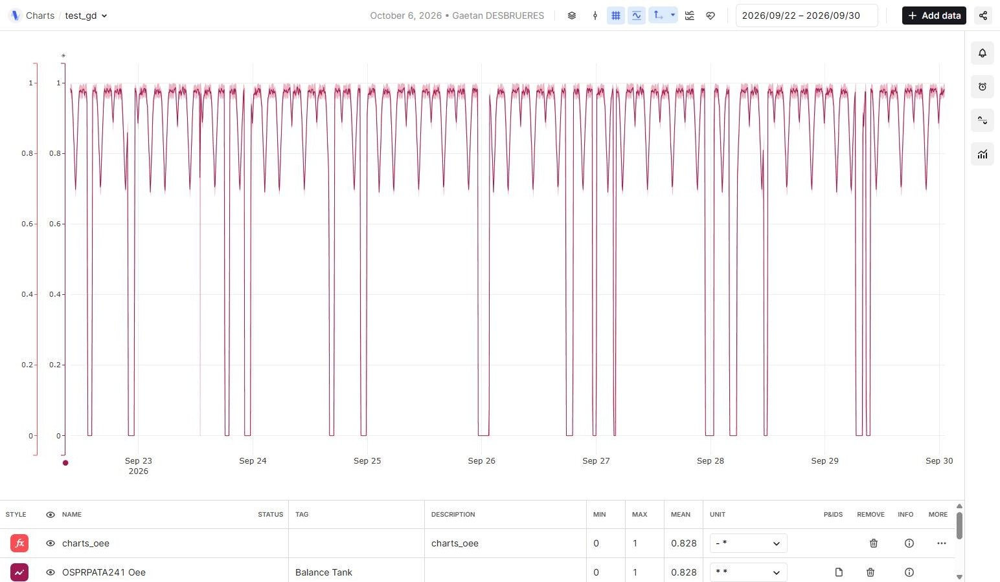
test_gd. Huit jours de l'OEE du Balance Tank, du 22 au 30 septembre. Les chutes jusqu'à 0 sont les arrêts de la machine ; les creux vers 0,7 sont les baisses de qualité. La série Oee et le calcul charts_oee se superposent : même moyenne, 0,828. Les trois autres séries sont dans le graphique mais masquées.The test_gd chart. Eight days of the Balance Tank's OEE, 22 to 30 September. The falls to 0 are the machine stops; the dips to about 0.7 are the quality drops. The Oee series and the charts_oee calculation overlay each other: same mean, 0.828. The three other series are in the chart but hidden.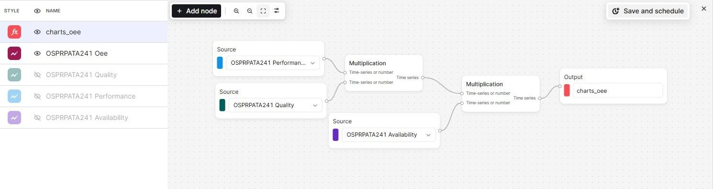
charts_oee. Trois nœuds source, deux multiplications, une sortie : Performance × Quality, puis × Availability. À gauche, les cinq lignes du graphique.The charts_oee calculation. Three source nodes, two multiplications, one output: Performance × Quality, then × Availability. On the left, the five rows of the chart.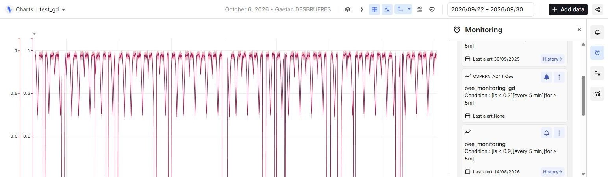
oee monitoring, oee_monitoring_gd sur la série Oee : sous 0,7, évaluée toutes les 5 minutes, pendant plus de 5 minutes. Les autres tâches viennent de sessions précédentes du bootcamp.The monitoring job. In the oee monitoring folder, oee_monitoring_gd on the Oee series: below 0.7, evaluated every 5 minutes, for more than 5 minutes. The other jobs come from earlier bootcamp sessions.Canvas
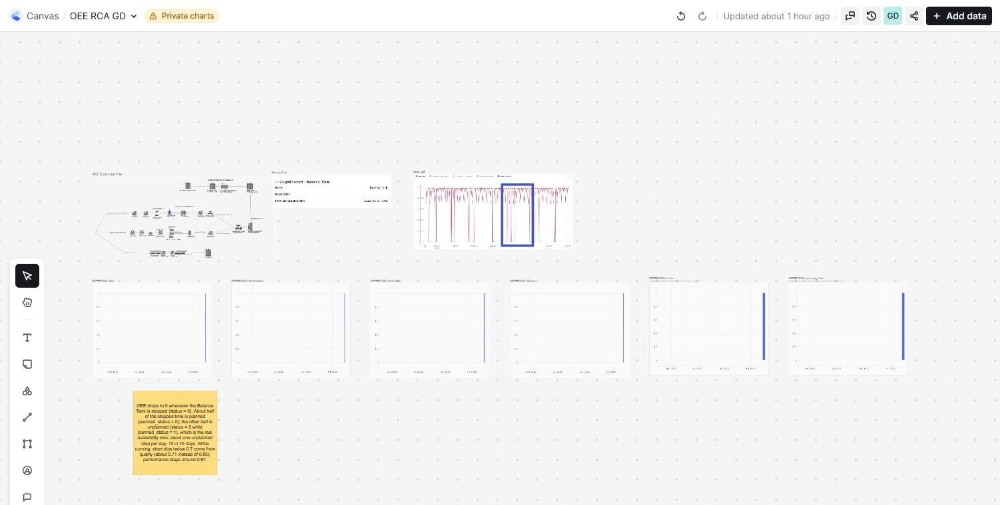
OEE RCA GD, vue d'ensemble. En haut : le plan P&ID, la fiche de l'équipement et le graphique Charts avec son rectangle. Au milieu : les six séries temporelles. En bas à gauche : la note adhésive.The OEE RCA GD canvas, overview. Top: the P&ID drawing, the asset card and the Charts chart with its rectangle. Middle: the six time series. Bottom left: the sticky note.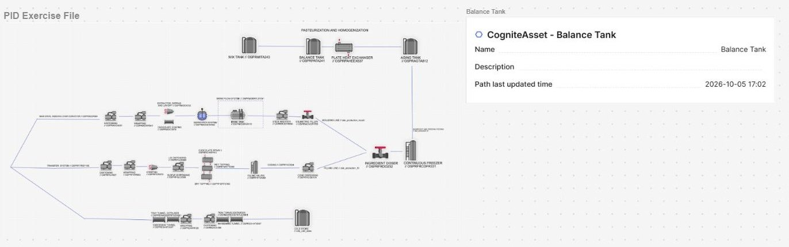
CogniteAsset du Balance Tank, obtenue par « Find related data ». Sur le plan, le réservoir porte son tag OSPRPATA241.The drawing and the asset. The "PID Exercise File" file and the Balance Tank's CogniteAsset card, reached through "Find related data". On the drawing, the tank carries its tag OSPRPATA241.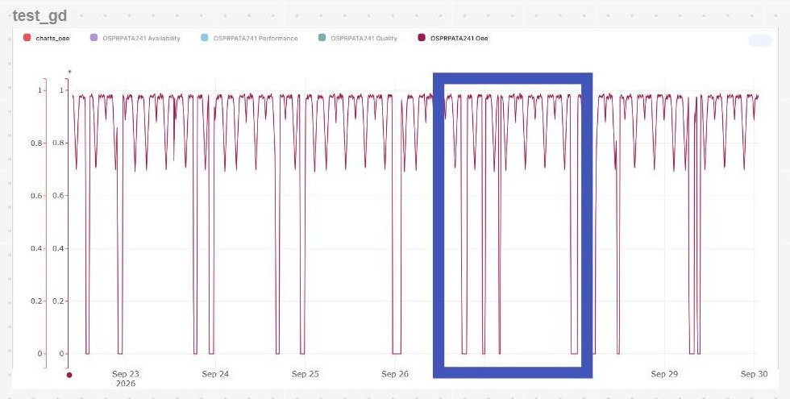
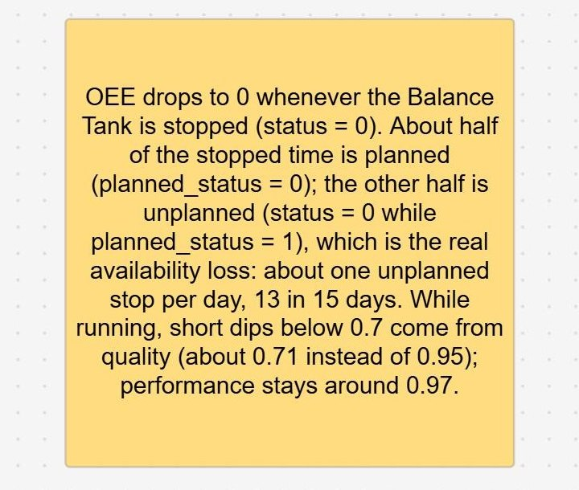
Sur le canvas, les séries posées seules s'affichent par défaut sur deux ans : leurs 15 jours de données n'y sont qu'un trait à droite. C'est le graphique Charts qui rend les chutes lisibles.
On the canvas, standalone series display two years by default: their 15 days of data are only a line on the right. It is the Charts chart that makes the drops readable.
05Ce que disent les données : pourquoi l'OEE chuteWhat the data says: why OEE drops
Sur 15 jours et 18 602 minutes de données de l'unité, deux phénomènes distincts.
Over 15 days and 18,602 minutes of data for the unit, two distinct phenomena.
| PhénomènePhenomenon | OccurrencesOccurrences | DuréeDuration | Signature dans les sériesSignature in the series |
|---|---|---|---|
| Arrêt planifiéPlanned stop | 15 | 994 min |
status = 0 et planned_status = 0. OEE, qualité, performance et disponibilité tombent à 0 ensemble.
status = 0 and planned_status = 0. OEE, quality, performance and availability all fall to 0 together. |
| Arrêt non planifiéUnplanned stop | 13 | 1007 min |
status = 0 alors que planned_status = 1. Même effet sur les quatre séries : c'est la vraie perte de disponibilité.
status = 0 while planned_status = 1. Same effect on the four series: this is the real availability loss. |
| Creux de qualité, machine en marcheQuality dip, machine running | 62 | 312 min | Qualité à 0,71 au lieu de 0,95 pendant environ 7 minutes ; performance stable à 0,97. Revient aux mêmes heures chaque jour. Quality at 0.71 instead of 0.95 for about 7 minutes; performance steady at 0.97. Recurs at the same times every day. |
L'OEE tombe donc à zéro quand la machine est à l'arrêt, environ un arrêt planifié et un arrêt non planifié par jour. En marche, il est bon (qualité 0,95, performance 0,98) et ne passe sous 0,7 que lors de brefs creux de qualité.
OEE therefore falls to zero when the machine is stopped, roughly one planned and one unplanned stop per day. While running it is good (quality 0.95, performance 0.98) and only goes below 0.7 during brief quality dips.
Limite du calcul fourni : il compte aussi les arrêts planifiés comme un OEE nul, parce qu'une division par zéro y est remplacée par 0. Une définition classique de l'OEE les exclut ; l'OEE moyen de l'unité serait alors d'environ 0,87 au lieu de 0,83.
Limitation of the supplied calculation: it also counts planned stops as zero OEE, because a division by zero is replaced by 0. A standard OEE definition excludes them; the unit's average OEE would then be about 0.87 instead of 0.83.
06Résultats vérifiésVerified results
| ContrôleCheck | ConstatéFound | |
|---|---|---|
Le calcul charts_oee redonne l'OEE de la functionThe charts_oee calculation reproduces the function's OEE | même moyenne sur la période affichée : 0,828 et 0,828same mean over the displayed period: 0.828 and 0.828 | OK |
Tâche de surveillance oee_monitoring_gdMonitoring job oee_monitoring_gd | présente : sous 0,7, toutes les 5 min, pendant plus de 5 minpresent: below 0.7, every 5 min, for more than 5 min | OK |
| Fichier « PID Exercise File »File "PID Exercise File" | contenu chargé, relié à 7 équipementscontent uploaded, linked to 7 assets | OK |
| Objets de données sur le canvasData objects on the canvas | le plan, l'équipement, 6 séries, le graphiquethe drawing, the asset, 6 series, the chart | OK |
| Annotations sur le canvasAnnotations on the canvas | 1 rectangle et 1 note adhésive1 rectangle and 1 sticky note | OK |
07Pièges rencontrés et solutionsPitfalls and fixes
| SymptômeSymptom | Cause | SolutionFix |
|---|---|---|
| Graphique vide sur les dernières heuresEmpty chart over the last few hours | Les séries OEE d'une unité s'arrêtent à son dernier changement d'état, parfois plusieurs jours en arrière. A unit's OEE series stop at its last change of state, sometimes several days back. | Choisir une période large, par exemple les deux dernières semaines. Choose a wide period, for example the last two weeks. |
| Séries introuvables sous le nom donné par la docSeries not found under the name given in the docs |
Les séries calculées ont un nom lisible (« OSPRPATA241 Oee »), les séries mesurées portent leur identifiant (OSPRPATA241:status).
Calculated series have a readable name ("OSPRPATA241 Oee"), measured series carry their identifier (OSPRPATA241:status). | Chercher par le tag de l'équipement, pas par le nom complet. Search by the asset tag, not by the full name. |
| Plusieurs tâches de surveillance de même nom dans le dossierSeveral monitoring jobs with the same name in the folder | Le projet a servi à des sessions précédentes ; leurs tâches sont restées dans le dossier partagé. The project was used by earlier sessions; their jobs stayed in the shared folder. | Donner à la sienne un nom distinctif, pour la retrouver. Give yours a distinctive name, so you can find it. |
| L'API montre plusieurs canvas de même nom, l'interface un seulThe API shows several canvases with the same name, the UI only one | Canvas garde des copies de sauvegarde pour son historique des versions, rattachées à l'original. Canvas keeps backup copies for its version history, attached to the original. | Ce ne sont pas des doublons : ne rien supprimer. They are not duplicates: delete nothing. |
| Le plan ne contient aucun texte exploitableThe drawing contains no usable text | Le PDF est une image : les tags y sont dessinés, pas écrits. Le lien avec les sept équipements est déclaré par le code qui crée le fichier. The PDF is an image: the tags are drawn, not written. The link to the seven assets is declared by the code that creates the file. | Retrouver les équipements par « Find related data » sur le fichier, comme le fait la doc. Reach the assets through "Find related data" on the file, as the docs do. |
08À retenirTakeaways
- La contextualisation des jours précédents est ce qui rend ce jour possible : c'est parce que le fichier et les séries sont reliés à l'équipement que Canvas sait les proposer ensemble.
- Un indicateur agrégé ne dit pas pourquoi il bouge. Il faut le décomposer, puis revenir aux signaux bruts, ici l'état de la machine.
- Recalculer un indicateur par un second chemin est un contrôle bon marché : le calcul dans Charts a confirmé la function.
- Connaître la définition exacte d'un indicateur avant de le commenter : ici, les arrêts planifiés pèsent sur l'OEE alors qu'ils ne le devraient pas.
- Un canvas vaut par sa conclusion écrite, pas par le nombre d'objets posés dessus.
- The contextualisation done on the previous days is what makes this day possible: because the file and the series are linked to the asset, Canvas can offer them together.
- An aggregated indicator does not say why it moves. Break it down, then go back to the raw signals, here the machine state.
- Recalculating an indicator by a second route is a cheap check: the calculation in Charts confirmed the function.
- Know the exact definition of an indicator before commenting on it: here, planned stops weigh on OEE when they should not.
- A canvas is worth its written conclusion, not the number of objects placed on it.
09Écarts et suiteDifferences and next steps
Le graphique s'appelle test_gd, le canvas OEE RCA GD et la tâche de surveillance oee_monitoring_gd, au lieu des noms de la doc. Le rectangle a été tracé par l'assistant de code, en pilotant l'interface Fusion, et l'analyse des chutes a été faite hors de Fusion, par lecture des séries. Restent inutilisés : la superposition d'événements et les graphiques publics de Charts ; les commentaires, le partage et l'assistant IA de Canvas ; les filtres de localisation de Search.
The chart is called test_gd, the canvas OEE RCA GD and the monitoring job oee_monitoring_gd, instead of the names in the docs. The rectangle was drawn by the coding assistant, driving the Fusion interface, and the drop analysis was done outside Fusion, by reading the series. Left unused: event overlays and public charts in Charts; comments, sharing and the AI assistant in Canvas; location filters in Search.
- Vérifier que la formatrice peut ouvrir le canvas et y voir le graphique : le canvas affiche « Private charts ».
- Passer le quiz de fin de bootcamp (seuil de réussite : 70 %).
- Confirmer avec l'instructeur comment est évaluée la partie « dépôt GitHub ».
- Check that the instructor can open the canvas and see the chart in it: the canvas shows "Private charts".
- Take the end-of-bootcamp quiz (pass mark: 70%).
- Confirm with the instructor how the "GitHub repository" part is assessed.
Mode opératoire — tout refaire, étape par étapeProcedure — rebuild everything, step by step
validé sur le projet 33, test et productionvalidated on project 33, test and productionComment utiliser cette pageHow to use this page
Les douze phases se suivent dans l'ordre. Chaque étape indique où elle se passe, la commande ou les clics à faire, et le résultat attendu. Ne passez à la suite que lorsque ce résultat est obtenu. <n> désigne le numéro de votre projet ; le nôtre était 33.
The twelve phases follow one another in order. Each step says where it happens, the command or clicks to perform, and the expected result. Only move on once that result is obtained. <n> stands for your project number; ours was 33.
Le contenu exact des fichiers YAML est donné par la documentation du bootcamp ; cette page dit lesquels créer, dans quel ordre, et comment vérifier. Les douze phases ont été exécutées sur le projet 33 ; les résultats attendus sont ceux qu'on a obtenus.
The exact content of the YAML files comes from the bootcamp documentation; this page says which ones to create, in what order, and how to verify. All twelve phases were executed on project 33; the expected results are the ones we obtained.
La phase 13 est à part : elle explique comment porter ce projet local dans un dépôt GitHub et le déployer avec GitHub Actions, comme le fait le parcours officiel. Elle est documentée mais n'a pas été exécutée sur le projet 33.
Phase 13 stands apart: it explains how to move this local project into a GitHub repository and deploy it with GitHub Actions, as the official path does. It is documented but was not executed on project 33.
0PrérequisPrerequisites
- Un compte sur le tenant Entra du bootcamp (répertoire
cognite enablement bootcamp) et l'accès à l'organisation Fusioncog-enablement-bootcamp. - Deux projets CDF :
cdf-bootcamp-<n>-testetcdf-bootcamp-<n>-prod, sur le clusterwesteurope-1. - L'accès à la documentation du bootcamp, qui contient le texte des fichiers YAML.
- Sur le poste : Python 3.10 ou plus récent et un terminal PowerShell.
- Un dossier de projet dont le chemin est court. S'il est synchronisé (OneDrive, SharePoint), les fichiers de secrets le seront aussi : à décider en connaissance de cause.
- An account on the bootcamp Entra tenant (directory
cognite enablement bootcamp) and access to the Fusion organisationcog-enablement-bootcamp. - Two CDF projects:
cdf-bootcamp-<n>-testandcdf-bootcamp-<n>-prod, on thewesteurope-1cluster. - Access to the bootcamp documentation, which holds the text of the YAML files.
- On the workstation: Python 3.10 or later and a PowerShell terminal.
- A project folder with a short path. If it is synchronised (OneDrive, SharePoint), the secrets files will be too: decide knowingly.
À relever au fil de l'eau, pour chaque environnementTo collect along the way, for each environment
| InformationItem | Où la trouverWhere to find it | Où la rangerWhere to keep it |
|---|---|---|
| Object ID des 4 groupes EntraObject ID of the 4 Entra groups | Entra, liste des groupes filtrée sur bootcamp-<n>-Entra, group list filtered on bootcamp-<n>- | fichier de secrets (3 d'entre eux) et groupe du Toolkitsecrets file (3 of them) and the Toolkit group |
| Client ID des 3 applicationsClient ID of the 3 applications | Entra, App registrationsEntra, App registrations | fichier de secretssecrets file |
| Value des 3 secretsValue of the 3 secrets | Entra, affichée une seule fois à la créationEntra, shown only once at creation | fichier de secrets, nulle part ailleurssecrets file, nowhere else |
1Préparer le poste de travailPrepare the workstation
Créer un environnement Python isolé, hors du dossier du projetCreate an isolated Python environment, outside the project folder Local
py -3.13 -m venv "$env:USERPROFILE\.venvs\cdf33"
Installer le Toolkit dans la version imposée, et le pont vers les certificats WindowsInstall the Toolkit at the pinned version, plus the bridge to the Windows certificates Local
& "$env:USERPROFILE\.venvs\cdf33\Scripts\python.exe" -m pip install "cognite-toolkit==0.6.53" pip-system-certs
Piège. Une version plus récente du Toolkit refuse la configuration du bootcamp. Sans
pip-system-certs, un proxy d'entreprise qui inspecte le trafic provoqueCERTIFICATE_VERIFY_FAILED.Pitfall. A newer Toolkit version rejects the bootcamp configuration. Without
pip-system-certs, a corporate proxy that inspects traffic causesCERTIFICATE_VERIFY_FAILED.Activer l'environnement (à refaire dans chaque nouveau terminal) et vérifierActivate the environment (once per new terminal) and verify Local
& "$env:USERPROFILE\.venvs\cdf33\Scripts\Activate.ps1" cdf --version
Résultat attendu :
CDF-Toolkit version: 0.6.53.Toutes les commandes suivantes se lancent depuis le dossier du projet.Expected result:
CDF-Toolkit version: 0.6.53.Every command below is run from the project folder.
2Créer les comptes techniquesCreate the technical accounts
Six applications : trois rôles (admin-tk, icapi-extractors, data-pipeline-oee) pour chacun des deux environnements.
Six applications: three roles (admin-tk, icapi-extractors, data-pipeline-oee) for each of the two environments.
Se placer dans le bon répertoireSwitch to the right directory Entra
Sur entra.microsoft.com, cliquer sur son adresse en haut à droite, Switch directory, puis choisir
cognite enablement bootcamp.On entra.microsoft.com, click your address at the top right, Switch directory, then choose
cognite enablement bootcamp.Créer chaque applicationCreate each application Entra
Applications → App registrations → New registration. Nom :
bootcamp-<n>-<env>-<rôle>-app. Laisser le reste par défaut, Register, puis relever l'Application (client) ID.Applications → App registrations → New registration. Name:
bootcamp-<n>-<env>-<role>-app. Leave the rest as default, Register, then note the Application (client) ID.Créer son secretCreate its secret Entra
Certificates & secrets → New client secret → Add. Copier aussitôt la colonne Value.
Certificates & secrets → New client secret → Add. Copy the Value column straight away.
Piège. Ne pas copier le Secret ID. La Value fait une quarantaine de caractères et contient un
~; le Secret ID ressemble à un identifiant avec des tirets. La Value n'est plus affichée ensuite.Pitfall. Do not copy the Secret ID. The Value is about forty characters long and contains a
~; the Secret ID looks like a hyphenated identifier. The Value is never shown again.Ajouter l'application à son groupeAdd the application to its group Entra
Groups → All groups → ouvrir
bootcamp-<n>-<env>-<rôle>→ Members → Add members → chercher l'application → Select. À faire pour les six.Groups → All groups → open
bootcamp-<n>-<env>-<role>→ Members → Add members → search for the application → Select. Do it for all six.Piège. Un oubli ici ne provoque aucune erreur immédiate : le compte s'authentifie, mais n'a aucun droit dans CDF. Il se révèle plus tard, par un 403 sur les extracteurs. La phase 5 le contrôle.
Pitfall. An omission here raises no immediate error: the account authenticates, but has no rights in CDF. It surfaces later, as a 403 on the extractors. Phase 5 checks for it.
Relever l'Object ID des groupesNote the groups' Object IDs Entra
Dans la liste des groupes filtrée sur
bootcamp-<n>-, relever l'Object ID deadmin-tk,icapi-extractors,data-pipeline-oeeetdata-developer, pour test et pour prod.In the group list filtered on
bootcamp-<n>-, note the Object ID ofadmin-tk,icapi-extractors,data-pipeline-oeeanddata-developer, for test and for prod.
3Monter le squelette du projetSet up the project skeleton
Récupérer le paquet « Bootcamp » du ToolkitGet the Toolkit's "Bootcamp" package Local
cdf modules init
Choisir le dossier courant, puis le paquet Bootcamp, puis confirmer. Il fournit
cdf.tomlet le code Python des deux functions. Dans notre cas ces fichiers ont été copiés directement depuis le paquet installé, sans cette commande ; le contenu est le même.Choose the current folder, then the Bootcamp package, then confirm. It supplies
cdf.tomland the Python code of both functions. In our case these files were copied straight from the installed package, without this command; the content is the same.Écrire
config.test.yamlWriteconfig.test.yamlLocalColler le contenu donné par la doc et ne modifier que le bloc
environment:name: test,project: cdf-bootcamp-<n>-test,validation-type: test.Paste the content given by the docs and change only the
environmentblock:name: test,project: cdf-bootcamp-<n>-test,validation-type: test.Écrire
.envWrite.envLocalColler le gabarit de la doc et remplacer chaque valeur entre chevrons : projet de test, trois client IDs, trois Values de secret, trois Object IDs (
data-developer,icapi-extractors,data-pipeline-oee).Paste the template from the docs and replace every value in angle brackets: test project, three client IDs, three secret Values, three Object IDs (
data-developer,icapi-extractors,data-pipeline-oee).Piège. Une ligne s'écrit
NOM=valeur: retirer les chevrons, ne mettre ni guillemets ni espaces.Pitfall. A line reads
NAME=value: remove the angle brackets, add no quotes and no spaces.
4Autoriser le Toolkit dans le projetAuthorise the Toolkit in the project
Créer le groupe du Toolkit, à la mainCreate the Toolkit's group, by hand Fusion
Dans le projet de test : espace Admin → Access management → Create. Nom
cognite_toolkit_service_principal. Ajouter les capabilities Projects et Groups avec toutes leurs actions, portée All. Source ID : l'Object ID du groupe Entrabootcamp-<n>-test-admin-tk.In the test project: Admin workspace → Access management → Create. Name
cognite_toolkit_service_principal. Add the Projects and Groups capabilities with all their actions, scope All. Source ID: the Object ID of the Entra groupbootcamp-<n>-test-admin-tk.Piège. La liste des capabilities est longue : taper
projpuisgrouppour les trouver. Vérifier en haut de page qu'on est bien dans le projet de test.Pitfall. The capability list is long: type
projthengroupto find them. Check at the top of the page that you are in the test project.Laisser le Toolkit compléter ses droitsLet the Toolkit complete its own rights Local
cdf auth verify
Il liste une vingtaine de droits manquants, puis propose de mettre à jour le groupe : répondre
y.It lists about twenty missing rights, then offers to update the group: answer
y.Résultat attendu : en relançant la commande,
OK - The cognite_toolkit_service_principal has all the required capabilities.Expected result: on running the command again,
OK - The cognite_toolkit_service_principal has all the required capabilities.
5Déployer les fondationsDeploy the foundations
Créer les huit fichiersCreate the eight files Local
Sous
modules/bootcamp/: trois groups (data_foundation/auth/data_developer.Group.yaml,ice_cream_api/auth/icapi_extractors.Group.yaml,use_cases/oee/auth/data_pipeline_oee.Group.yaml), la table RAW (ice_cream_api/raw/ice-cream-factory-db.Table.yaml), deux data sets (…/data_sets/data_sets.DataSet.yaml) et deux spaces (…/data_models/*.space.yaml).Under
modules/bootcamp/: three groups (data_foundation/auth/data_developer.Group.yaml,ice_cream_api/auth/icapi_extractors.Group.yaml,use_cases/oee/auth/data_pipeline_oee.Group.yaml), the RAW table (ice_cream_api/raw/ice-cream-factory-db.Table.yaml), two data sets (…/data_sets/data_sets.DataSet.yaml) and two spaces (…/data_models/*.space.yaml).Construire, simuler, déployerBuild, simulate, deploy Local
cdf build --env=test cdf deploy --dry-run cdf deploy
Ce cycle de trois commandes revient à chaque phase. Lire le tableau du dry-run avant de déployer, et vérifier que l'encadré annonce le bon projet.
This three-command cycle recurs in every phase. Read the dry-run table before deploying, and check that the header names the right project.
Résultat attendu : 3 groups, 2 spaces, 1 base RAW et 1 table créés ; 2 data sets créés, ou mis à jour s'ils existaient déjà ; aucune suppression.
Expected result: 3 groups, 2 spaces, 1 RAW database and 1 table created; 2 data sets created, or updated if they already existed; no deletion.
Contrôler les accès réelsCheck the actual access Local
python scripts\check_project.py
Ce script, en lecture seule, demande à CDF quels groupes chaque compte technique obtient réellement. À ce stade seule sa section 1 compte ; les autres signaleront normalement des manques.
This read-only script asks CDF which groups each technical account actually gets. At this stage only its section 1 matters; the others will normally report gaps.
Résultat attendu : trois lignes
OKdans la section « Access ». Une ligneWARN … = nonedésigne un compte absent de son groupe Entra : revenir à la phase 2, étape 4.Expected result: three
OKlines in the "Access" section. AWARN … = noneline points to an account missing from its Entra group: go back to phase 2, step 4.Vérifier dans l'interfaceVerify in the UI Fusion
Admin → Access management : ouvrir chaque groupe et comparer son Source ID à l'Object ID Entra. Data models → onglet Spaces : les deux spaces doivent y figurer.
Admin → Access management: open each group and compare its Source ID with the Entra Object ID. Data models → Spaces tab: both spaces must be listed.
6Déployer les hosted extractorsDeploy the hosted extractors
Créer les sept fichiersCreate the seven files Local
Dans
modules/bootcamp/ice_cream_api/hosted_extractors/Ice Cream Factory API/:Source.yaml, puisDestination.yaml,Mapping.yamletJob.yamldans chacun des sous-dossiersassets/ettimeseries/.In
modules/bootcamp/ice_cream_api/hosted_extractors/Ice Cream Factory API/:Source.yaml, thenDestination.yaml,Mapping.yamlandJob.yamlin each of theassets/andtimeseries/subfolders.Construire, simuler, déployerBuild, simulate, deploy Local
cdf build --env=test cdf deploy --dry-run cdf deploy
Résultat attendu : 1 source, 2 destinations, 2 mappings et 2 jobs créés. Les jobs démarrent d'eux-mêmes dans la minute.
Expected result: 1 source, 2 destinations, 2 mappings and 2 jobs created. The jobs start by themselves within a minute.
Vérifier l'arrivée des donnéesVerify that the data arrives Fusion Local
Integrate → Extraction pipelines → onglet Hosted extractors : deux jobs au statut Running. Integrate → Staging →
ice-cream-factory-db→assets: la table est remplie. Ou relancerpython scripts\check_project.py.Integrate → Extraction pipelines → Hosted extractors tab: two jobs with status Running. Integrate → Staging →
ice-cream-factory-db→assets: the table is populated. Or runpython scripts\check_project.pyagain.Résultat attendu : 1021 lignes dans la table RAW et 2512 séries temporelles.
Expected result: 1021 rows in the RAW table and 2512 time series.
Piège. Si un job est en
cdf_write_erroravec un 403, le compte des extracteurs n'a pas ses droits (phase 5, étape 3). Une fois corrigé, le job ne retente qu'à son intervalle, un jour pour les équipements ; le mettre en pause puis le reprendre ne le relance pas. Pour le relancer aussitôt, modifier temporairementintervaldans sonJob.yaml, redéployer, puis remettre la valeur d'origine.Pitfall. If a job is in
cdf_write_errorwith a 403, the extractors' account lacks its rights (phase 5, step 3). Once fixed, the job only retries at its interval, one day for the assets; pausing and resuming does not re-run it. To re-run it at once, temporarily changeintervalin itsJob.yaml, redeploy, then restore the original value.
7Déployer et exécuter les transformationsDeploy and run the transformations
Créer les cinq fichiersCreate the five files Local
Dans
modules/bootcamp/ice_cream_api/transformations/: pourcreate_asset_hierarchy, un.Transformation.yaml, un.Transformation.sqlet un.schedule.yaml(chaque nuit, à la minute de son numéro de projet) ; pourcontextualize_ts_assets, un.Transformation.yamlet un.Transformation.sql, sans planification.In
modules/bootcamp/ice_cream_api/transformations/: forcreate_asset_hierarchy, a.Transformation.yaml, a.Transformation.sqland a.schedule.yaml(every night, at the minute of your project number); forcontextualize_ts_assets, a.Transformation.yamland a.Transformation.sql, with no schedule.Construire, simuler, déployerBuild, simulate, deploy Local
cdf build --env=test cdf deploy --dry-run cdf deploy
Résultat attendu : 2 transformations et 1 planification créées. Le build affiche des
DataSetMissingWarning, sans conséquence.Expected result: 2 transformations and 1 schedule created. The build shows
DataSetMissingWarningmessages, which are harmless.Exécuter les transformations, dans l'ordreRun the transformations, in order Fusion
Integrate → Transformations. Ouvrir Create Cognite Asset Hierarchy → Run → Run as current user, attendre la fin. Puis faire de même avec Contextualize TimeSeries and Assets. Les équipements doivent exister avant qu'on y rattache les séries.
Integrate → Transformations. Open Create Cognite Asset Hierarchy → Run → Run as current user, wait for it to finish. Then do the same with Contextualize TimeSeries and Assets. The assets must exist before the series are linked to them.
Contrôler puis réparer les chemins des équipementsCheck, then repair, the asset paths Local
python scripts\repair_asset_paths.py python scripts\repair_asset_paths.py --apply
La première commande ne fait que lire : elle indique combien d'équipements ont un
pathincomplet. Si ce nombre n'est pas nul, la seconde les répare, après une sauvegarde des liens parent et un essai sur un seul équipement.The first command only reads: it reports how many assets have an incomplete
path. If that number is not zero, the second repairs them, after backing up the parent links and trying on a single asset.Résultat attendu :
final check: 1021/1021 assets with a correct path.Expected result:
final check: 1021/1021 assets with a correct path.Piège. Cette étape n'est pas dans la doc, et elle est indispensable : sans elle, les functions de la phase 8 ignorent en silence les séries des équipements concernés. Relancer la transformation ne corrige rien.
Pitfall. This step is not in the docs, and it is essential: without it, the phase 8 functions silently skip the series of the affected assets. Re-running the transformation fixes nothing.
8Déployer les functions et charger l'historiqueDeploy the functions and load the history
Créer les fichiersCreate the files Local
ice_cream_api/extraction_pipelines/ep_icapi_datapoints.ExtractionPipeline.yaml; puis, dansice_cream_api/functions/et dansuse_cases/oee/functions/, unfunctions.Function.yamlet unschedules.Schedule.yaml. Dans les deuxrequirements.txt, remplacercognite-sdkparcognite-sdk==7.89.0.ice_cream_api/extraction_pipelines/ep_icapi_datapoints.ExtractionPipeline.yaml; then, inice_cream_api/functions/and inuse_cases/oee/functions/, afunctions.Function.yamland aschedules.Schedule.yaml. In bothrequirements.txtfiles, replacecognite-sdkwithcognite-sdk==7.89.0.Construire, simuler, déployerBuild, simulate, deploy Local
cdf build --env=test cdf deploy --dry-run cdf deploy
Résultat attendu : 1 extraction pipeline, 2 functions et 3 planifications créées.
Expected result: 1 extraction pipeline, 2 functions and 3 schedules created.
Attendre que les functions soient prêtesWait for the functions to be ready Fusion
Build solutions → Functions : les deux functions doivent quitter l'état « Deploying », ce qui prend une dizaine de minutes.
Build solutions → Functions: both functions must leave the "Deploying" state, which takes about ten minutes.
Charger l'historique des valeursLoad the value history Fusion
Sur Ice Cream API DataPoints Extractor, bouton de lancement, coller la première entrée ; attendre la fin, puis lancer la seconde.
On Ice Cream API DataPoints Extractor, the call button, paste the first input; wait for it to finish, then run the second.
{"sites": ["Houston","Oslo","Kuala_Lumpur","Hannover","Nuremberg"], "hours": 336, "backfill": true} {"sites": ["Marseille","Sao_Paulo","Chicago","Rotterdam","London"], "hours": 336, "backfill": true}Calculer l'OEE sur l'historiqueCalculate OEE over the history Fusion
Sur OEE TimeSeries, lancer deux appels, l'un après l'autre sans attendre.
On OEE TimeSeries, run two calls, one after the other without waiting.
{"sites": ["Houston","Oslo","Kuala_Lumpur","Hannover","Nuremberg"], "lookback_minutes": 20160} {"sites": ["Marseille","Sao_Paulo","Chicago","Rotterdam","London"], "lookback_minutes": 20160}Piège. Bien coller les deux listes de sites, différentes. Un appel affiche « Completed » même s'il a traité la mauvaise liste, et l'extracteur même s'il a échoué : seul le contrôle ci-dessous fait foi.
Pitfall. Make sure to paste the two different site lists. A call shows "Completed" even if it processed the wrong list, and the extractor even if it failed: only the check below is conclusive.
ContrôlerCheck Local
python scripts\check_project.py
Résultat attendu : sections 4 et 5 en
OK: 2512 séries mesurées avec des valeurs, 3140 séries OEE, aucune avec un historique court.Expected result: sections 4 and 5 show
OK: 2512 measured series with values, 3140 OEE series, none with a short history.
9Déployer le workflowDeploy the workflow
Créer les trois fichiersCreate the three files Local
Dans
modules/bootcamp/ice_cream_api/workflows/, avec le même préfixewf_icapi_data_pipeline:.Workflow.yaml,.WorkflowVersion.yaml(quatre tâches reliées pardependsOn: hiérarchie, contextualisation, extraction, OEE) et.WorkflowTrigger.yaml(toutes les 15 minutes).In
modules/bootcamp/ice_cream_api/workflows/, with the samewf_icapi_data_pipelineprefix:.Workflow.yaml,.WorkflowVersion.yaml(four tasks linked bydependsOn: hierarchy, contextualisation, extraction, OEE) and.WorkflowTrigger.yaml(every 15 minutes).Construire, simuler, déployerBuild, simulate, deploy Local
cdf build --env=test cdf deploy --dry-run cdf deploy
Résultat attendu : 1 workflow, 1 version et 1 déclencheur créés.
Expected result: 1 workflow, 1 version and 1 trigger created.
Suivre la première exécutionFollow the first execution Fusion
Integrate → Data workflows →
wf_icapi_data_pipeline→ Run history. Elle démarre au quart d'heure suivant, parfois avec une à deux minutes de retard, et dure environ quatre minutes.Integrate → Data workflows →
wf_icapi_data_pipeline→ Run history. It starts at the next quarter hour, sometimes one or two minutes late, and lasts about four minutes.Résultat attendu : les quatre tâches terminées, dans l'ordre.
Expected result: all four tasks completed, in order.
10Rejouer en productionReplay in production
Les fichiers des modules ne changent pas. Toute commande de production nomme explicitement son fichier de secrets et son dossier de build.
The module files do not change. Every production command explicitly names its secrets file and its build folder.
Créer
config.prod.yamlet.env.prodCreateconfig.prod.yamland.env.prodLocalCopier
config.test.yamlet remplacertestparproddans le blocenvironment. Copier.envet y mettre les valeurs de production : projet, trois client IDs, trois Values de secret, trois Object IDs.Copy
config.test.yamland replacetestwithprodin theenvironmentblock. Copy.envand put in the production values: project, three client IDs, three secret Values, three Object IDs.Autoriser le Toolkit en productionAuthorise the Toolkit in production Fusion Local
Refaire la phase 4 dans le projet de production, avec l'Object ID du groupe
bootcamp-<n>-prod-admin-tk, puis :Repeat phase 4 in the production project, with the Object ID of the
bootcamp-<n>-prod-admin-tkgroup, then:cdf --env-path .env.prod auth verify
Construire pour la productionBuild for production Local
cdf --env-path .env.prod build --env=prod --build-dir build_prod
Passe 1 : les fondations seulementPass 1: the foundations only Local
cdf --env-path .env.prod deploy build_prod --env=prod --dry-run --include auth --include data_sets --include raw --include data_models cdf --env-path .env.prod deploy build_prod --env=prod --include auth --include data_sets --include raw --include data_models python scripts\check_project.py --env-file .env.prod
Résultat attendu : trois lignes
OKdans la section « Access » avant de continuer.Expected result: three
OKlines in the "Access" section before going any further.Piège. Déployer tout d'un coup ferait démarrer les extracteurs avant la création de leurs groupes : premier passage en 403, puis un jour d'attente.
Pitfall. Deploying everything at once would start the extractors before their groups exist: a 403 on the first run, then a day's wait.
Passe 2 : tout le restePass 2: everything else Local
cdf --env-path .env.prod deploy build_prod --env=prod --dry-run cdf --env-path .env.prod deploy build_prod --env=prod
Résultat attendu : 19 ressources créées. Dans la minute, 1021 lignes RAW et 2512 séries temporelles.
Expected result: 19 resources created. Within a minute, 1021 RAW rows and 2512 time series.
Laisser le workflow créer la hiérarchieLet the workflow create the hierarchy Fusion
Attendre sa première exécution complète dans Run history. Ne pas le lancer à la main au même moment : deux exécutions qui se chevauchent se gênent.
Wait for its first complete execution in Run history. Do not start it by hand at the same moment: two overlapping executions get in each other's way.
Réparer les chemins des équipementsRepair the asset paths Local
python scripts\repair_asset_paths.py --env-file .env.prod $env:ALLOW_NON_TEST='yes'; python scripts\repair_asset_paths.py --env-file .env.prod --apply
Hors projet de test, le script exige cette variable d'environnement : c'est un garde-fou volontaire.
Outside a test project, the script requires this environment variable: a deliberate safeguard.
Charger l'historique et contrôlerLoad the history and check Fusion Local
Refaire dans le projet de production les étapes 3 à 5 de la phase 8, puis :
Repeat steps 3 to 5 of phase 8 in the production project, then:
python scripts\check_project.py --env-file .env.prod
Résultat attendu :
ALL CHECKS OK.Expected result:
ALL CHECKS OK.
11Exploiter les données : Charts et CanvasUse the data: Charts and Canvas vérifié le 6 octobreverified on 6 October
Tout se fait dans l'interface du projet de production, sur l'unité OSPRPATA241, le « Balance Tank » d'Oslo.
Everything is done in the production project's UI, on unit OSPRPATA241, the Oslo "Balance Tank".
Tracer les quatre séries OEEPlot the four OEE series Fusion
Flows → Charts → New chart → Add data → Add time series. Chercher
OSPRPATA241et ajouter Availability, Performance, Quality et Oee. Choisir une période large : les séries OEE d'une unité s'arrêtent à son dernier changement d'état, parfois plusieurs jours en arrière. Mettre*comme unité de chaque série, puis Y axes → Merge units.Flows → Charts → New chart → Add data → Add time series. Search for
OSPRPATA241and add Availability, Performance, Quality and Oee. Choose a wide period: a unit's OEE series stop at its last change of state, sometimes several days back. Set*as the unit of each series, then Y axes → Merge units.Recalculer l'OEE dans ChartsRecalculate OEE in Charts Fusion
Add data → Create calculation, sortie nommée
charts_oee. Ajouter trois nœuds Source (Availability, Quality, Performance) et deux nœuds Function « Multiplication ». Relier Performance et Quality à la première, son résultat et Availability à la seconde, la seconde à Output.Add data → Create calculation, output named
charts_oee. Add three Source nodes (Availability, Quality, Performance) and two "Multiplication" Function nodes. Connect Performance and Quality to the first, its result and Availability to the second, the second to Output.Résultat attendu : la courbe
charts_oeese superpose à la série Oee calculée par la function.Expected result: the
charts_oeecurve overlays the Oee series calculated by the function.Créer une alerteCreate an alert Fusion
Monitoring → Create. Nom
oee_monitoring, source Oee, seuil Under 0.7, durée minimale 5 minutes, dossieroee monitoring.Monitoring → Create. Name
oee_monitoring, source Oee, threshold Under 0.7, minimum duration 5 minutes, folderoee monitoring.Piège. Le dossier peut déjà contenir les tâches de sessions précédentes, sous le même nom. Ajouter ses initiales au nom de la sienne.
Pitfall. The folder may already hold the jobs of earlier sessions, under the same name. Add your initials to the name of yours.
Charger le plan P&IDUpload the P&ID drawing Fusion
Télécharger
PID_ICF.pdfdepuis le lien de la doc. Build solutions → Jupyter Notebooks : déposer le fichier, puis exécuter le code de la doc. Il crée unCogniteFilenommé « PID Exercise File », y charge le PDF et le relie à sept équipements d'Oslo.Download
PID_ICF.pdffrom the link in the docs. Build solutions → Jupyter Notebooks: drop the file in, then run the code from the docs. It creates aCogniteFilenamed "PID Exercise File", uploads the PDF into it and links it to seven Oslo assets.Résultat attendu : le fichier apparaît dans Flows → Search → Files. Contrôle en lecture seule depuis le poste :
python scripts\upload_pid.py --env-file .env.proddoit afficher le fichier chargé et relié à 7 équipements.Expected result: the file appears in Flows → Search → Files. Read-only check from the workstation:
python scripts\upload_pid.py --env-file .env.prodmust show the file uploaded and linked to 7 assets.Construire le CanvasBuild the Canvas Fusion
Flows → Canvas → Create Canvas, renommé
OEE RCA. Add data → ajouter « PID Exercise File ». Depuis le plan, Find related data : ajouter l'équipement « Balance Tank », puis ses séries Oee, Performance, Availability, Quality, Status et Planned status.Flows → Canvas → Create Canvas, renamed
OEE RCA. Add data → add "PID Exercise File". From the drawing, Find related data: add the "Balance Tank" asset, then its Oee, Performance, Availability, Quality, Status and Planned status series.Analyser les chutes d'OEEAnalyse the OEE drops Fusion
Ajouter le graphique Charts au canvas (Add data), y entourer un groupe de chutes d'un rectangle (Shape), puis expliquer leur cause dans une Sticky note. Comparer
statusetplanned_status: s'ils valent tous deux 0 l'arrêt était planifié, si seulstatusvaut 0 il ne l'était pas.Add the Charts chart to the canvas (Add data), mark a group of drops on it with a rectangle (Shape), then explain their cause in a Sticky note. Compare
statusandplanned_status: if both are 0 the stop was planned, if onlystatusis 0 it was not.Résultat attendu : un canvas avec le plan, l'équipement, six séries, le graphique, un rectangle et une note. Sur le graphique, les chutes ressortent mieux que sur les séries posées seules, qui s'affichent par défaut sur deux ans.
Expected result: a canvas with the drawing, the asset, six series, the chart, a rectangle and a note. The drops stand out better on the chart than on the standalone series, which display two years by default.
12Contrôle finalFinal check
python scripts\check_project.py python scripts\check_project.py --env-file .env.prod
Les deux commandes doivent se terminer par ALL CHECKS OK. Elles vérifient, en lecture seule :
Both commands must end with ALL CHECKS OK. They verify, read-only:
| ContrôleCheck | Valeur attendueExpected value |
|---|---|
| Comptes techniques ayant obtenu leur groupe CDFTechnical accounts that obtained their CDF group | 3 / 3 |
| Jobs des hosted extractors en fonctionnementHosted extractor jobs running | 2 |
Lignes dans la table RAW assetsRows in the RAW table assets | 1021 |
| Équipements, dont sites racinesAssets, of which root sites | 1021 · 10 |
| Équipements au parent introuvable ou au chemin incompletAssets with a missing parent or an incomplete path | 0 |
| Séries mesurées, rattachées à un équipement et alimentéesMeasured series, linked to an asset and populated | 2512 |
| Séries OEE, sans historique courtOEE series, none with a short history | 3140 |
| Functions prêtes, extractions sans échec, workflow en coursFunctions ready, extractions without failure, workflow running | OK |
Relevé du 6 octobre 2026 au matin, après une nuit de fonctionnement automatique : ALL CHECKS OK sur le projet de test comme sur le projet de production.
Reading taken on the morning of 6 October 2026, after a night of unattended operation: ALL CHECKS OK on the test project and on the production project alike.
13Porter le projet sur GitHub et déployer avec GitHub ActionsMove the project to GitHub and deploy with GitHub Actions documenté, non exécutédocumented, not executed
Le parcours officiel range les fichiers dans un dépôt GitHub et laisse GitHub Actions lancer le Toolkit : un contrôle à blanc à chaque pull request, un déploiement à chaque fusion dans main. Nous avons lancé les mêmes commandes à la main. Cette phase décrit comment rejoindre le parcours officiel à partir du dossier local, sans rien recréer dans CDF.
The official path keeps the files in a GitHub repository and lets GitHub Actions run the Toolkit: a dry run on every pull request, a deployment on every merge into main. We ran the same commands by hand. This phase describes how to join the official path from the local folder, without recreating anything in CDF.
Les fichiers de workflow proposés ici partent du modèle fourni par le Toolkit 0.6.53 et de la documentation publique de Cognite, adaptés à nos deux environnements. Si la page « Deploy to prod (GitHub Actions) » de la documentation du bootcamp donne un autre contenu, c'est elle qui fait foi.
The workflow files proposed here start from the template shipped with Toolkit 0.6.53 and from the public Cognite documentation, adapted to our two environments. If the "Deploy to prod (GitHub Actions)" page of the bootcamp documentation gives different content, that page prevails.
Ce que l'évaluation regarde (grille du support de formation)What the evaluation looks at (rubric from the training deck)
| Dépôt GitHubGitHub repository | CritèresCriteria |
|---|---|
| RéussiPass | La production se déploie depuis main, avec une revue obligatoire. La branche main est protégée : une pull request est exigée.Production deploys from main, with a required review. The main branch is protected: a pull request is required. |
| ÉchecNo pass | Les environnements test et prod ne sont pas configurés. Aucune GitHub Action ne s'est exécutée avec succès.The test and prod environments are not configured. No GitHub Action has run successfully. |
Ce qui va dans le dépôt, ce qui n'y va jamaisWhat goes into the repository, what never does
| Dans le dépôtIn the repository | Jamais dans le dépôtNever in the repository |
|---|---|
cdf.toml, config.test.yaml, config.prod.yaml, modules/, .gitignore, .github/workflows/ ; au choix les scripts de contrôle scripts/*.py; optionally the check scripts scripts/*.py | .env, .env.prod, build/, build_prod/ ; le support de formation et les sauvegardes produites par les scripts; the training deck and the backups written by the scripts |
Les fichiers YAML ne contiennent que des références ${NOM} : aucune valeur secrète n'est écrite dans modules/ ni dans les fichiers config. Les valeurs seront saisies dans GitHub, à l'étape 5.
The YAML files only hold ${NAME} references: no secret value is written in modules/ or in the config files. The values are entered in GitHub, at step 5.
Créer le dépôt, videCreate the repository, empty GitHub
Sur github.com : New repository, nom
cdf-bootcamp-<n>. Ne cocher ni README, ni.gitignore, ni licence : le premier envoi viendra du poste.On github.com: New repository, name
cdf-bootcamp-<n>. Tick neither README, nor.gitignore, nor licence: the first push will come from the workstation.Piège. Avec un compte GitHub gratuit, les environnements (variables et secrets par environnement) et la protection de branche n'existent que sur un dépôt public ; sur un dépôt privé il faut une offre payante, et les relecteurs obligatoires d'un environnement demandent GitHub Enterprise. Demander à l'instructeur où le dépôt est attendu avant de le créer. Un dépôt public ne pose pas de problème tant qu'aucun secret n'y a jamais été envoyé.
Pitfall. With a free GitHub account, environments (per-environment variables and secrets) and branch protection only exist on a public repository; a private repository needs a paid plan, and required reviewers on an environment need GitHub Enterprise. Ask the instructor where the repository is expected before creating it. A public repository is fine as long as no secret has ever been pushed to it.
Faire une copie de travail hors du dossier synchroniséMake a working copy outside the synchronised folder Local
$repo = "C:\dev\cdf-bootcamp-33" New-Item -ItemType Directory -Force "$repo\scripts" | Out-Null Copy-Item cdf.toml, config.test.yaml, config.prod.yaml $repo Copy-Item modules $repo -Recurse Copy-Item scripts\*.py "$repo\scripts" Set-Location $repo
Git crée un dossier caché
.gitfait de milliers de petits fichiers, que OneDrive ou SharePoint synchronisent mal (verrous, conflits, chemins trop longs). Un dossier court, hors synchronisation, évite ces pannes. Les fichiers de secrets et les dossiersbuildne sont volontairement pas copiés.Git creates a hidden
.gitfolder made of thousands of small files, which OneDrive or SharePoint synchronise poorly (locks, conflicts, over-long paths). A short folder outside synchronisation avoids these failures. The secrets files and thebuildfolders are deliberately not copied.Initialiser Git et la liste des fichiers ignorésInitialise Git and the ignore list Local
git config --global user.name "Prénom Nom" git config --global user.email "adresse-du-compte-github" git init -b main cdf repo init --host None Add-Content .gitignore "`n# Project additions`n.env.*`n!.env.tmpl`nbuild_prod/"
git init -b maintransforme le dossier en dépôt local, sur une branche nomméemain.cdf repo init --host Noney dépose le.gitignoredu Toolkit et un gabarit.env.tmpl, sans fichier de workflow pour l'instant. La dernière ligne complète la liste des fichiers que Git ne doit jamais suivre.git init -b mainturns the folder into a local repository, on a branch namedmain.cdf repo init --host Nonedrops in the Toolkit's.gitignoreand a.env.tmpltemplate, with no workflow file for now. The last line completes the list of files Git must never track.Piège. Le
.gitignoredu Toolkit écarte.envetbuild/, mais ni.env.prodnibuild_prod/. Sans la dernière ligne, les secrets de production partiraient au premier envoi si ce fichier se trouvait dans le dossier.Pitfall. The Toolkit's
.gitignoreexcludes.envandbuild/, but neither.env.prodnorbuild_prod/. Without the last line, the production secrets would leave on the first push if that file were in the folder.Premier commit, contrôle, premier envoiFirst commit, check, first push Local
git add . git status --short git ls-files | Select-String "\.env|^build" git commit -m "Add CDF bootcamp modules and Toolkit configuration" git remote add origin https://github.com/<compte>/cdf-bootcamp-<n>.git git push -u origin main
git addprépare les fichiers,git commitles enregistre dans l'historique local,git pushles envoie sur GitHub. La troisième commande liste ce que Git s'apprête à suivre parmi les noms sensibles. Au premier envoi, une fenêtre de connexion à GitHub s'ouvre.git addstages the files,git commitrecords them in the local history,git pushsends them to GitHub. The third command lists what Git is about to track among the sensitive names. On the first push, a GitHub sign-in window opens.Résultat attendu : le contrôle n'affiche que
.env.tmpl. Le dépôt GitHub montremodules/, les deux fichiersconfigetcdf.toml. Aucun workflow ne tourne encore.Expected result: the check shows only
.env.tmpl. The GitHub repository showsmodules/, bothconfigfiles andcdf.toml. No workflow runs yet.Piège. Un secret envoyé reste dans l'historique même si le fichier est supprimé ensuite. Si cela arrive, le considérer comme compromis : en créer un nouveau dans Entra et supprimer l'ancien.
Pitfall. A pushed secret stays in the history even if the file is deleted afterwards. If it happens, treat it as compromised: create a new one in Entra and delete the old one.
Créer les environnements
testetprodCreate thetestandprodenvironments GitHubSettings → Environments → New environment, deux fois. Un environnement GitHub joue le rôle du fichier de secrets : dans chacun, saisir les quatorze valeurs sous les mêmes noms, reprises de
.envpourtestet de.env.prodpourprod.Settings → Environments → New environment, twice. A GitHub environment plays the part of the secrets file: in each one, enter the fourteen values under the same names, taken from
.envfortestand from.env.prodforprod.RubriqueSection NomsNames Environment secrets (3) IDP_CLIENT_SECRET,ICAPI_EXTRACTORS_CLIENT_SECRET,DATA_PIPELINE_OEE_CLIENT_SECRETEnvironment variables (11) CDF_CLUSTER,CDF_PROJECT,LOGIN_FLOW,IDP_TENANT_ID,IDP_TOKEN_URL,IDP_CLIENT_ID,ICAPI_EXTRACTORS_CLIENT_ID,DATA_PIPELINE_OEE_CLIENT_ID,DATA_DEVELOPER_SOURCE_ID,ICAPI_EXTRACTORS_SOURCE_ID,DATA_PIPELINE_OEE_SOURCE_IDUn secret est chiffré et n'est plus jamais affiché ; une variable reste lisible par quiconque a accès au dépôt. Dans
prod, régler aussi Deployment branches and tags sur Selected branches and tags avecmain, et ajouter un Required reviewer si l'offre GitHub le propose.A secret is encrypted and never shown again; a variable stays readable by anyone with access to the repository. In
prod, also set Deployment branches and tags to Selected branches and tags withmain, and add a Required reviewer if the GitHub plan offers it.Piège. Vérifier
CDF_PROJECTdans chaque environnement : c'est cette valeur, et non le nom de l'environnement, qui désigne le projet CDF touché. Ne pas recopier les chevrons ni des guillemets.Pitfall. Check
CDF_PROJECTin each environment: this value, not the environment's name, decides which CDF project is touched. Copy neither angle brackets nor quotes.Protéger la branche
mainProtect themainbranch GitHubSettings → Branches → Add branch protection rule (ou Rules → Rulesets). Motif
main, cocher Require a pull request before merging et Require approvals (1). Plus personne ne peut alors pousser directement dansmain: tout changement passe par une branche et une pull request.Settings → Branches → Add branch protection rule (or Rules → Rulesets). Pattern
main, tick Require a pull request before merging and Require approvals (1). Nobody can then push straight intomain: every change goes through a branch and a pull request.Piège. L'auteur d'une pull request ne peut pas approuver la sienne. Seul sur le dépôt, il faut y inviter un relecteur (Settings → Collaborators) ; à défaut, l'administrateur peut fusionner en passant outre la règle, tant que Do not allow bypassing the above settings n'est pas coché.
Pitfall. The author of a pull request cannot approve their own. Alone on the repository, you must invite a reviewer (Settings → Collaborators); failing that, the administrator can merge by bypassing the rule, as long as Do not allow bypassing the above settings is not ticked.
Ajouter les deux workflows, sur une brancheAdd the two workflows, on a branch Local
git switch -c add-gh-actions cdf repo init --host GitHub
La seconde commande crée
.github/workflows/dry-run.yamletdeploy.yaml; elle laisse en place les fichiers déjà présents. Le modèle vise un seul environnement nommédevet ne transmet que cinq valeurs : remplacer le contenu des deux fichiers par ce qui suit. L'imagecognite/toolkit:0.6.53fige la version du Toolkit, la même que sur le poste.The second command creates
.github/workflows/dry-run.yamlanddeploy.yaml; it leaves existing files in place. The template targets a single environment nameddevand passes only five values: replace the content of both files with the following. Thecognite/toolkit:0.6.53image pins the Toolkit version, the same as on the workstation..github/workflows/dry-run.yaml— à chaque pull request versmain, un contrôle à blanc sur le projet de teston every pull request tomain, a dry run against the test projectname: Toolkit Dry Run on: pull_request: branches: - main jobs: dry-run: name: Dry run (test) runs-on: ubuntu-latest environment: test container: image: cognite/toolkit:0.6.53 env: CDF_CLUSTER: ${{ vars.CDF_CLUSTER }} CDF_PROJECT: ${{ vars.CDF_PROJECT }} LOGIN_FLOW: ${{ vars.LOGIN_FLOW }} IDP_TENANT_ID: ${{ vars.IDP_TENANT_ID }} IDP_TOKEN_URL: ${{ vars.IDP_TOKEN_URL }} IDP_CLIENT_ID: ${{ vars.IDP_CLIENT_ID }} IDP_CLIENT_SECRET: ${{ secrets.IDP_CLIENT_SECRET }} ICAPI_EXTRACTORS_CLIENT_ID: ${{ vars.ICAPI_EXTRACTORS_CLIENT_ID }} ICAPI_EXTRACTORS_CLIENT_SECRET: ${{ secrets.ICAPI_EXTRACTORS_CLIENT_SECRET }} ICAPI_EXTRACTORS_SOURCE_ID: ${{ vars.ICAPI_EXTRACTORS_SOURCE_ID }} DATA_PIPELINE_OEE_CLIENT_ID: ${{ vars.DATA_PIPELINE_OEE_CLIENT_ID }} DATA_PIPELINE_OEE_CLIENT_SECRET: ${{ secrets.DATA_PIPELINE_OEE_CLIENT_SECRET }} DATA_PIPELINE_OEE_SOURCE_ID: ${{ vars.DATA_PIPELINE_OEE_SOURCE_ID }} DATA_DEVELOPER_SOURCE_ID: ${{ vars.DATA_DEVELOPER_SOURCE_ID }} steps: - uses: actions/checkout@v4 - name: Build the modules run: cdf build --env=test - name: Dry run the deployment run: cdf deploy --env=test --dry-run.github/workflows/deploy.yaml— à chaque fusion dansmain, le test d'abord, la production ensuiteon every merge intomain, test first, production nextname: Toolkit Deploy on: push: branches: - main jobs: deploy-test: name: Deploy to test runs-on: ubuntu-latest environment: test container: image: cognite/toolkit:0.6.53 env: # paste here the same 14 lines as in dry-run.yaml (CDF_CLUSTER ... DATA_DEVELOPER_SOURCE_ID) steps: - uses: actions/checkout@v4 - name: Build the modules run: cdf build --env=test - name: Deploy the modules run: cdf deploy --env=test deploy-prod: name: Deploy to prod needs: deploy-test runs-on: ubuntu-latest environment: prod container: image: cognite/toolkit:0.6.53 env: # paste here the same 14 lines as in dry-run.yaml (CDF_CLUSTER ... DATA_DEVELOPER_SOURCE_ID) steps: - uses: actions/checkout@v4 - name: Build the modules run: cdf build --env=prod - name: Dry run the deployment run: cdf deploy --env=prod --dry-run - name: Deploy the modules run: cdf deploy --env=prodÀ lire ainsi :
ondit quand le workflow démarre ;environmentchoisit le jeu de variables et de secrets de l'étape 5, c'est donc lui qui oriente vers le test ou la production ;vars.NOMlit une variable etsecrets.NOMun secret ;needs: deploy-testinterdit de toucher à la production si le test a échoué. Le blocenvdoit être recopié en entier dans chaque job : une valeur oubliée laisse un${NOM}non remplacé au build.Read it this way:
onsays when the workflow starts;environmentpicks the set of variables and secrets from step 5, so it is what points to test or production;vars.NAMEreads a variable andsecrets.NAMEa secret;needs: deploy-testforbids touching production if test failed. Theenvblock must be copied in full into each job: a forgotten value leaves an unreplaced${NAME}at build time.Envoyer la branche et ouvrir la pull requestPush the branch and open the pull request Local GitHub
git add .github git commit -m "Add Toolkit dry-run and deploy workflows" git push --set-upstream origin add-gh-actions
Sur GitHub, cliquer Compare & pull request, puis Create pull request. Le workflow « Toolkit Dry Run » démarre ; son journal se lit dans l'onglet Actions.
On GitHub, click Compare & pull request, then Create pull request. The "Toolkit Dry Run" workflow starts; its log is read in the Actions tab.
Résultat attendu : une coche verte. Le projet de test étant déjà déployé, le contrôle à blanc ne doit annoncer aucune création ; seuls la source et les deux destinations des hosted extractors, et la transformation
contextualize_ts_assets, apparaissent en « Changed », comme en local.Expected result: a green tick. The test project being already deployed, the dry run must announce no creation; only the hosted extractors' source and two destinations, and the
contextualize_ts_assetstransformation, show as "Changed", as they do locally.Faire relire, fusionner, laisser déployerGet it reviewed, merge, let it deploy GitHub
Après approbation, Squash and merge, puis Delete branch. La fusion écrit dans
mainet déclenche « Toolkit Deploy » : le test, puis la production.After approval, Squash and merge, then Delete branch. The merge writes into
mainand triggers "Toolkit Deploy": test, then production.Piège. Cette fusion lance un vrai
cdf deploysur les deux projets, production comprise. Ne fusionner qu'après avoir lu le contrôle à blanc de la pull request.Pitfall. This merge runs a real
cdf deployon both projects, production included. Only merge after reading the pull request's dry run.Résultat attendu : deux jobs verts, « Deploy to test » puis « Deploy to prod », sans aucune ressource créée ni supprimée.
Expected result: two green jobs, "Deploy to test" then "Deploy to prod", with no resource created or deleted.
Se remettre à jour et contrôlerGet back in sync and check Local
git switch main git pull git branch -d add-gh-actions
Puis relancer la phase 12 depuis le dossier qui contient les fichiers de secrets : les deux projets doivent toujours rendre
ALL CHECKS OK.Then rerun phase 12 from the folder that holds the secrets files: both projects must still return
ALL CHECKS OK.
Ensuite, pour chaque modificationAfterwards, for every change
git switch main
git pull
git checkout -b name-branch
# edit the files, then: cdf build --env=test and cdf deploy --dry-run
git add .
git commit -m "Description of what you are about to commit"
git push --set-upstream origin name-branch
- Une branche par changement, un message de commit qui dit ce qui change.
- Jamais de modification directe dans
main: une pull request, relue. - Squash and merge pour fusionner, puis supprimer la branche : une branche fusionnée ne reste pas ouverte.
- Le déploiement local reste possible pour essayer sur le test ; la production ne se déploie plus que par la fusion.
- One branch per change, a commit message that says what changes.
- Never a direct change in
main: a pull request, reviewed. - Squash and merge to merge, then delete the branch: a merged branch does not stay open.
- Local deployment remains possible to try things on test; production is only deployed through the merge.
Si un déploiement par GitHub Actions est suivi d'un 401 ou d'un 403If a GitHub Actions deployment is followed by a 401 or a 403
Les valeurs ne viennent plus de .env mais de Settings → Environments. Contrôler dans cet ordre, pour le compte technique concerné :
The values no longer come from .env but from Settings → Environments. Check in this order, for the technical account concerned:
- Quel compte est utilisé : le Toolkit, les extracteurs ou le pipeline OEE.
- Dans Entra, l'application est bien membre de son groupe, et de lui seul.
- Dans Fusion, Admin → Access management : le Source ID du groupe CDF est l'Object ID du groupe Entra.
- Dans l'environnement GitHub concerné : le client ID est celui de l'application dans Entra. Un secret ne se relit pas : en créer un nouveau dans Entra et remplacer la valeur dans GitHub.
- Si l'erreur vient d'un hosted extractor ou d'une function, le supprimer dans Fusion puis relancer le workflow, pour qu'il ne garde pas les anciens identifiants.
- Which account is used: the Toolkit, the extractors or the OEE pipeline.
- In Entra, the application is a member of its group, and of that group only.
- In Fusion, Admin → Access management: the CDF group's Source ID is the Entra group's Object ID.
- In the GitHub environment concerned: the client ID is the application's one in Entra. A secret cannot be read back: create a new one in Entra and replace the value in GitHub.
- If the error comes from a hosted extractor or a function, delete it in Fusion then rerun the workflow, so that it does not keep the old credentials.
GitHub Codespaces, le poste de développement en ligne proposé par le bootcamp, n'est pas nécessaire ici : le poste local en tient lieu. Si un Codespace a été créé, l'arrêter après usage et le supprimer s'il ne sert plus : même arrêté, il consomme du stockage, et GitHub le supprime après 30 jours d'inactivité.
GitHub Codespaces, the online development machine offered by the bootcamp, is not needed here: the local workstation stands in for it. If a Codespace was created, stop it after use and delete it when no longer needed: even stopped, it uses storage, and GitHub deletes it after 30 days of inactivity.